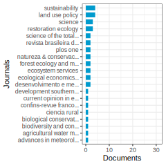
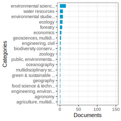
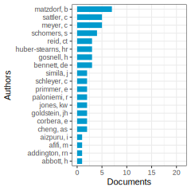
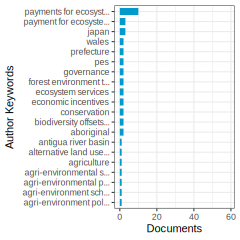
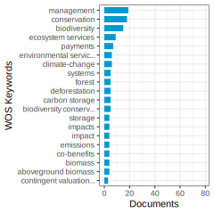

Payment_ees
Data and Methods
Data
| Query | payment for environment or ecosystem services |
|---|---|
| Database | WOS |
| Documents | 2545 |
| Date retrieved | 2024-04-12 |
| Fukan Analysis | Not apply. |
| ID | Q293 |
Methods
- Data collection from WOS
- Created citation network
- Extracted Maximum Component
- Clustering using the Louvain method
- Cluster description
Results
Dataset Overview
Clusters
1-1—. Evaluating Payments for Ecosystem Services (PES) Schemes in China and Beyond
1-2—. PES programs in Brazil for water and forest restoration
1-3—. Payment for Ecosystem Services (PES) schemes and their effectiveness
1-4—. Negotiating and Implementing Decentralized Payment for Ecosystem Services (PES) Schemes
1-5—. Application of Payment for Ecosystem Services (PES) for Sustainable Water Resource Management
1-6—. Willingness to Pay for Ecosystem Services
1-99—. Payment for Ecosystem Services (PES)
2-1—. Payments for Ecosystem Services (PES) and their Implementation Challenges
2-2—. Critical analysis of PES implementation
2-3—. Payments for Ecosystem Services (PES)
2-4—. Payments for Ecosystem Services (PES) Schemes
2-5—. Payments for ecosystem services critique
2-99—. Payment for Ecosystem Services in Agricultural Policy
3-1—. Payment for Ecosystem Services Evaluation
3-2—. Motivational crowding effects of payments for ecosystem services
3-3—. Evaluating PES Programs for Forest and Watershed Conservation
3-4—. Participation in Payment for Ecosystem Services (PES) Programs
3-99—. Payment for ecosystem services (PES) for multiple objectives
4-0—. Payment for Ecosystem Services (PES) Programs and Their Impacts
5-0—. Designing and Targeting Payments for Ecosystem Services (PES) Schemes
6-0—. The Role of Payment for Ecosystem Services in Poverty Alleviation in Developing Countries
7-0—. Equity Considerations in Payments for Ecosystem Services (PES) Schemes
8-0—. Evaluating the Effectiveness and Challenges of Payment for Ecosystem Services (PES) Programs
9-0—. Payment for Ecosystem Services (PES) for mangrove conservation
99-0—. Evaluating Payment for Ecosystem Services Schemes in Agroforestry and Forest Recreation Contexts
test
Cluster 1-1—: Evaluating Payments for Ecosystem Services (PES) Schemes in China and Beyond
Documents: 63; Ave. Year: 2015.7; Ave. Citations: 50.8
Error: 529
Articles: This study in China predicts payment for ecosystem services (PES) standards and optimizes PES funds allocation from 2025 to 2040 in the Zhejiang-Jiangsu-Shanghai region, highlighting the importance of considering ecological gains to improve fund management and alleviate regional contradictions. (X. Gao et al. 2023) degree: 22 citations: 9
Stakeholders in Chinese agriculture perceive sustainability certification schemes as crucial for agricultural exports due to high standards demanded by importers, while domestic organic certification lacks uniformity and cost-effective pricing, highlighting a need for centralized government intervention to regulate and enforce standards. (XR. Wang and Hu 2024) degree: 2 citations: 0
The study examines how the Patagonia Purpose Trust promotes ecosystem preservation through an innovative mechanism that increases the opportunity cost of neglecting its environmental purpose, counters fiduciary influence, and ensures oversight through the renewal of co-trustees. (Agafonow and Perez 2024) degree: 4 citations: 0
Payments for ecosystem services (PES) are a mechanism to incentivize local actors to provide environmental services, with design and implementation considerations, including scope, design characteristics, comparison to alternative instruments, effectiveness, and distributional implications, crucial for tailored solutions to address specific environmental challenges. (Engel, Pagiola, and Wunder 2008) degree: 704 citations: 1709
Mediterranean cork oak savannas in Europe and Africa, vital for biodiversity and ecosystem services, face management challenges due to market devaluation of cork and poverty-driven overuse, highlighting the potential of “payment for ecosystem services” schemes to ensure their sustainable conservation and use. (Bugalho et al. 2011) degree: 9 citations: 410
The Environmentally Sensitive Areas (ESA) program in the United Kingdom, along with the Countryside Stewardship Scheme (CSS), aimed to protect landscapes and habitats through agri-environmental payments, proving effective in enrolling farmers but facing challenges in incentivizing substantial changes in farming practices, particularly in intensive farming areas. (Dobbs and Pretty 2008) degree: 33 citations: 125
This paper explores the potential of payments for ecosystem services (PES) as an alternative to logging for Indonesian communities with weak property rights, showing that PES design must consider the community’s ability to enforce agreements and the potential for increased payoffs from logging, emphasizing the complexity and context-specific nature of PES implementation. (Engel and Palmer 2008) degree: 38 citations: 82
Cluster 1-2—: PES programs in Brazil for water and forest restoration
Documents: 61; Ave. Year: 2017.9; Ave. Citations: 46.5
The texts explore the implementation and impacts of Payment for Ecosystem Services (PES) programs in Brazil, particularly focusing on water-related services and forest restoration in the Atlantic Forest biome. These programs aim to promote ecosystem services and biodiversity conservation by providing financial incentives for sustainable practices. While PES programs have shown positive impacts, they also face challenges such as lack of transparency, monitoring, and uneven spatial and financial distribution. The texts also highlight the potential of PES in supporting multifunctional forest restoration, meeting the global demand for forest products, and promoting sustainability and vegetation recovery in the Atlantic Forest.

Articles: Brazilian payment for environmental services programs in water-related services follow the “user pays” and “provider gets” principles, offering economic incentives to land users for enhancing ecosystem services. These initiatives have expanded in Brazil, particularly in the Atlantic Forest and Savanna biomes, focusing on water quality and quantity improvements through practices like reforestation and soil conservation. Despite positive impacts, challenges remain in terms of transparency, monitoring, and equitable distribution. (Mamedes et al. 2023) degree: 25 citations: 5
This study critically reviews Payment for Environmental Services (PES) schemes in Brazil, identifying a lack of clarity in concepts, insufficient focus on ecosystem services, and a need for standardization using the Common International Classification of Ecosystem Services (CICES) to enhance environmental efficacy. (Mota et al. 2023) degree: 39 citations: 2
Multifunctional forest restoration in Brazil has the potential to meet the increasing global demand for forest products through the promotion of sustainability and vegetation recovery, particularly by exploring the role of payments for ecosystem services, but further research is necessary to address knowledge gaps and advance understanding in this field. (Santos et al. 2023) degree: 13 citations: 0
Restoration projects can enhance ecosystem services and biodiversity, but conflicts may arise if single services are targeted; however, new valuation methods suggest economic benefits can outweigh costs, making Payment for Ecosystem Service schemes promising for incentivizing restoration and meeting stakeholder needs for achieving global restoration targets. (Bullock et al. 2011) degree: 37 citations: 718
Paying landowners to set aside private land for restoration in a biodiversity hotspot could revert species composition and ecological functions, benefiting local people at a cost equivalent to 6.5% of Brazil’s agricultural subsidies. (Banks-Leite et al. 2014) degree: 20 citations: 297
The Brazilian Atlantic forest, facing high vulnerability to climate change due to its fragmented state, highlights the importance of ecosystem-based adaptation strategies, including payment for ecosystem services, to enhance resilience and reduce society’s vulnerability to future climate scenarios. (Scarano and Ceotto 2015) degree: 11 citations: 219
Research on payment for ecosystem services is crucial for validating theoretical frameworks and improving program implementation; a case study of the Conservador das Aguas program in Brazil highlights the importance of stakeholder involvement, legal frameworks, and strategic decision-making in achieving successful outcomes. (Richards et al. 2015) degree: 47 citations: 81
Cluster 1-3—: Payment for Ecosystem Services (PES) schemes and their effectiveness
Documents: 48; Ave. Year: 2016.4; Ave. Citations: 58.2
The texts collectively examine Payment for Ecosystem Services (PES) schemes, which involve compensating landowners or providers for maintaining and enhancing ecosystem services. The articles analyze various PES programs implemented in different regions, particularly in Latin America, evaluating their design, costs, environmental effectiveness, and other outcomes. The texts highlight the diversity of PES schemes, ranging from user-financed to government-financed initiatives, and discuss factors that contribute to their success or failure, such as program design, incentives, institutional arrangements, and policy frameworks, ultimately shedding light on the effectiveness of these compensation mechanisms in promoting environmental conservation.
Articles: A bi-level optimization framework integrating a vertical eco-compensation mechanism with key water quality indicators is proposed to address pollution in lake water through the Lake Ecological Compensation (LEC) mechanism, demonstrating its efficiency in reducing emissions and promoting conservation with the cooperation of regional stakeholders. (He, Yao, and Varbanov 2023) degree: 10 citations: 4
The study identifies areas vulnerable to soil loss in the Potengi River watershed in Rio Grande do Norte using a multicriteria analysis, highlighting the need for efficient actions to recover degraded areas, emphasizing the importance of mapping land cover and implementing Payment for Environmental Services to preserve water resources in the region. (Sousa et al. 2024) degree: 2 citations: 0
This study assesses the livelihood sustainability of Payment for Ecosystem Services (PES) providers in the Cidanau Watershed, Indonesia, after two decades of implementation, using capital indexes based on the DFID’s sustainable livelihood framework, finding that both PES and non-PES farmers have similar patterns of capital assets sustainability, with PES farmers showing slightly higher human capital assets, indicating that both groups’ livelihoods are not yet sustainable and suggesting the need for further development of financial and human assets to achieve sustainability and adapt to new PES models in the future. (Biru, Karuniasa, and Mizuno 2023) degree: 13 citations: 0
Payment for ecosystem services (PES) programs vary in design and outcomes, with user-financed programs showing better targeting, adaptation to local conditions, monitoring, and enforcement compared to government-financed programs, highlighting the need for improved effectiveness and efficiency in both approaches. (Wunder, Engel, and Pagiola 2008) degree: 391 citations: 868
This review compares the literature on payment for ecosystem services (PES) in developing and industrialized countries, highlighting differences and similarities in conservation programs and research topics, and emphasizing the potential for synergies by exchanging research experiences between the two types of countries. (Schomers and Matzdorf 2013) degree: 240 citations: 353
Market-based schemes like Payment for Ecosystem Services (PES) aim to incentivize landowners in Latin America to enhance land management for ecosystem services. An analysis of 40 PES case studies in the region offers valuable insights for policymakers and program designers to improve the success rate of future PES initiatives. (Grima et al. 2016) degree: 125 citations: 205
Cluster 1-4—: Negotiating and Implementing Decentralized Payment for Ecosystem Services (PES) Schemes
Documents: 39; Ave. Year: 2015.2; Ave. Citations: 46.4
The texts explore various aspects of negotiating and implementing decentralized payment for ecosystem services (PES) schemes. They analyze the roles of providers, beneficiaries, and third parties in negotiating payments, as well as the efficiency and welfare implications of different PES designs. Case studies from diverse countries like Iran, Bolivia, Cambodia, and Ecuador illustrate the challenges and outcomes of decentralized PES initiatives aimed at conserving environmental services such as wetlands, water resources, and biodiversity. These examples highlight the importance of considering local contexts, institutional arrangements, and stakeholder interests when designing and implementing PES programs to achieve sustainable resource management and conservation goals.
Articles: This paper explores novel payment schemes for wetland ecosystem services, evaluating the efficiency of combining payments with subsidies through a theoretical model, considering the role of a third party in optimizing ecosystem service provision, and highlighting potential conflicts in preferences between beneficiaries and providers. (Nimubona and Pereau 2022) degree: 18 citations: 4
The study examines the potential of Payment for Ecosystem Services to restore the Urmia Lake in Iran by analyzing the technical and economic feasibility of a PES scheme in the Siminehroud Sub-basin, utilizing satellite imagery, Benefit Transfer Method, and surveys to assess local farmers’ Willingness to Accept and Willingness to Pay, highlighting the need for significant governmental funding. (Daneshi et al. 2023) degree: 28 citations: 1
This study examines negotiations for payment for ecosystem services (PES) involving multiple providers and beneficiaries, identifying key factors influencing preferences for individual or collective bargaining, with Nash equilibria showing potential for first-best implementation through collective negotiations. (Nimubona, Ozkardas, and Pereau 2023) degree: 11 citations: 1
In Los Negros, Bolivia, a Payment for Ecosystem Services (PES) scheme involving in-kind compensations is being implemented to protect bird habitat and watershed, with funding from an international conservation donor and local government, aiming to incentivize forest protection and stabilize water flows for downstream users. (Asquith, Vargas, and Wunder 2008) degree: 112 citations: 229
This study compares three Payments for Ecosystem Services (PES) programs in Cambodia, where weak institutions pose challenges. Programs varied in direct payments to individuals or villages, with differing impacts on institutional arrangements, cost distribution, and conservation outcomes. Direct individual contracts showed efficient payments and rapid species protection, but lacked in building local management organizations and conservation understanding. In contrast, programs managed by local organizations were slower to establish but gained local support and were more institutionally effective, suggesting that empowering local institutions may enhance PES program sustainability in weak institutional contexts. (Clements et al. 2010) degree: 109 citations: 209
Decentralized payment for ecosystem services (PES) schemes in Ecuador, such as Pimampiro and PROFAFOR, have shown effectiveness in achieving environmental objectives with high additionality and low leakage effects, emphasizing targeted environmental services and strong conditionality, potentially improving recipients’ welfare through higher incomes. (Wunder and Alb’an 2008) degree: 109 citations: 221
Cluster 1-5—: Application of Payment for Ecosystem Services (PES) for Sustainable Water Resource Management
Documents: 36; Ave. Year: 2017.6; Ave. Citations: 32.8
The texts collectively explore the application of Payment for Ecosystem Services (PES) as a strategy for sustainable water resource management and addressing various water-related environmental challenges. They delve into different aspects of PES implementation, such as internalizing environmental externalities, mitigating transboundary pollution, calculating ecological compensation standards for water diversion projects, prioritizing areas for restoration, and optimizing water allocation. The studies employ various approaches, including game theory models, spatial analysis, and institutional frameworks, to develop principles and initiatives for effective PES implementation at local to global scales. Overall, these texts highlight the potential of PES as a tool for integrated water resource management, promoting sustainable practices, and addressing issues like pollution, diversions, and equitable allocation of water resources.

Articles: Payment for Ecosystem Services (PES) aims to internalize environmental externalities by assigning monetary value to Ecosystem Services (ES), facilitating recognition of their true worth and promoting sustainable management, particularly in the context of water resources. (Bellver-Domingo, Hern’andez-Sancho, and Molinos-Senante 2016) degree: 38 citations: 46
This study proposes a Payment for Ecosystem Services (PES) strategy to address transboundary air pollution, utilizing a stochastic differential game model to optimize regional economic and environmental interests, showing that dynamic PES outperforms fixed-fee and no PES strategies in reducing emissions. (JY. Liu et al. 2022) degree: 10 citations: 12
This study assesses ecological compensation standards for cross-basin water diversion projects, highlighting the importance of considering both main headwater and receiver areas to ensure effective watershed protection and development. Different perspectives and methods significantly influence compensation standards, with implications for implementation of compensation mechanisms. (YB. Wang et al. 2023) degree: 14 citations: 8
A spatial hierarchization methodology integrating landscape vulnerability and local demands was developed as a decision support tool for prioritizing degraded areas for agroforestry interventions, including resource allocation and public policies for payment for ecosystem services, using Multicriteria Decision Analysis in GIS software. (De Mendonca et al. 2023) degree: 5 citations: 1
Payment for Ecosystem Services (PES) is gaining popularity as an economic approach to manage ecosystems, with environmental economics focusing on market efficiency and ecological economics emphasizing ecological sustainability and fair distribution, as discussed in a Costa Rica workshop leading to the Heredia Declaration advocating for PES systems for fund-service resources. (Farley and Costanza 2010) degree: 182 citations: 503
The study explores using Payment for Ecosystem Services (PES) in watershed water resource management, proposing a model that integrates social equity mechanisms, game theory, and Shapley values to optimize water allocation and PES cost estimation, demonstrating its application in the Yongding River watershed in China. (YC. Fu et al. 2018) degree: 13 citations: 65
Effective and equitable water resource management requires understanding the link between human well-being and ecological stewardship, advocating for nested governance arrangements and proper attention to payments for ecosystem services. (Kolinjivadi, Adamowski, and Kosoy 2014) degree: 37 citations: 69
Cluster 1-6—: Willingness to Pay for Ecosystem Services
Documents: 35; Ave. Year: 2017.5; Ave. Citations: 26.4
The texts collectively explore the assessment of willingness to pay (WTP) for various ecosystem services, such as water conservation, soil retention, carbon fixation, and biodiversity conservation, among beneficiaries. Through methods like contingent valuation, these studies estimate the WTP of residents for protecting ecosystems, including forests, wetlands, and watersheds, via payment for ecosystem services (PES) programs. By analyzing factors that influence WTP, such as income, knowledge, attitudes, and socio-demographics, along with understanding the motivations behind protest responses against paying, these assessments aim to provide insights for designing appropriate payment levels and mechanisms for PES programs and policies focused on ecosystem conservation.
Articles: This study explores the geographical diversity of willingness to pay for ecosystem services on the Tibetan Plateau of China, revealing an average top limit of 1,080.95 CNY/year/capita and a preference to pay the highest amount for water conservation. Factors such as age, occupation, knowledge of willingness to pay, and individual attitudes significantly influence payment behaviors, highlighting the importance of individual knowledge and attitudes in driving geographical diversity in payments for ecosystem services in China. (YX. Liu 2020) degree: 24 citations: 21
This study examines stakeholders’ economic values for implementing Payments for Ecosystem Services (PES) as an alternative to resolving conflicts in designating protected areas, focusing on wetlands in Korea. Findings suggest that stakeholders have positive perceptions of PES contract terms, indicating potential for successful implementation. (Kim et al. 2023) degree: 24 citations: 2
Implementing PES programs in national parks effectively balances ecosystem conservation and economic development by engaging residents, whose willingness to participate and pay is crucial; a study in China’s Qinling National Park reveals 76.7% willingness to participate, with an average payment willingness of USD 20.3 per household annually, influenced by social trust, income, and cultural preferences. (RK. An et al. 2024) degree: 11 citations: 0
This study explores households’ willingness-to-pay for mangrove environmental services in Phu Long, Vietnam, using the Theory of Planned Behavior and demographic factors. The analysis reveals an average willingness-to-pay of 327,792 VND per year per household, with attitudes, perceived behavioral control, and knowledge about mangrove forests significantly influencing residents’ willingness-to-pay. Proposed policy implications aim to enhance residents’ support for the conservation and sustainable development of mangrove forests. (Thuy, Hue, and Dat 2024) degree: 5 citations: 0
The study evaluated the value of ecosystem hydropower services in the Zagunao River Basin in Southwest China using the InVEST model, highlighting the importance of ecological compensation, especially in cases of cascade development to reflect the differential rent value and ensure fair distribution of ecosystem service value. (B. Fu et al. 2014) degree: 15 citations: 81
This research explores how distinct value orientations influence willingness-to-pay for ecosystem services, finding that awareness of detrimental consequences and biospheric values positively impact payment preferences, while a beneficial (egoistic) orientation has a negative association with willingness-to-pay. (Obeng and Aguilar 2018) degree: 22 citations: 79
Protest responses in contingent valuation studies provide valuable insights for designing conservation policies, especially regarding payment for ecosystem services, revealing factors such as socio-demographic characteristics, pro-environmental attitudes, and stakeholder typology that influence willingness to pay. (Garc’ıa-Llorente, Mart’ın-L’opez, and Montes 2011) degree: 1 citations: 72
This study in the Chure region of Nepal assessed ecosystem service indicators and stakeholders’ willingness to pay, revealing forests as the main providers of ecosystem services, with downstream users showing willingness to pay more for improved drinking water services, especially with higher income levels. (Bhandari et al. 2016) degree: 27 citations: 66
This review assesses the quality of contingent valuation studies in the context of payments for ecosystem services programs, highlighting the need for methodological improvements to enhance their policy relevance and effectiveness in designing such programs. (Whittington and Pagiola 2012) degree: 32 citations: 59
Cluster 1-99—: Payment for Ecosystem Services (PES)
Documents: 105; Ave. Year: 2015.8; Ave. Citations: 33.7
The texts explore the use of payment for ecosystem services (PES) as a mechanism for environmental conservation and management, evaluating its effectiveness, transaction costs, and performance in various contexts. Public preferences and willingness to pay for ecosystem services are examined, along with modeling approaches for prioritizing areas for restoration and PES implementation. The role of PES in protecting free-flowing rivers, reducing deforestation, and supporting programs like REDD+ and South Africa’s Working for Water is discussed, while guidelines for improving the validity of ecosystem service valuation through benefit transfer are provided. The scope and equity implications of implementing PES in different regions, such as the Brazilian Amazon, are also analyzed.
Articles: Payment for ecosystem services (PES) programs are gaining popularity for their potential to sequester carbon by preventing deforestation and degradation, with transaction costs predicted to vary across different types of services, showing the lowest costs for club goods like water and the highest for pure public goods like carbon reduction, indicating the need for further research and experimentation to enhance the effectiveness of PES programs. (Alston, Andersson, and Smith 2013) degree: 57 citations: 28
European citizens, both rural and urban, show consistent preferences for wildlife management principles, including a preference for payments for environmental services, managing scarce species, prioritizing forest, agricultural, and aquatic habitats over urban landscapes, and favoring management in protected areas. (Mart’ınez-Jauregui et al. 2023) degree: 2 citations: 3
A modeling approach integrating multiple runoff mechanisms and epistemic uncertainty in watershed restoration priorities for Payments for Ecosystem Services in the Atlantic Forest, Brazil, demonstrates the importance of addressing uncertainty to improve cost-effectiveness and prioritize top areas accurately. (Possantti et al. 2023) degree: 9 citations: 3
Valuing Free-Flowing Rivers: Social values and sociodemographic factors influence willingness to pay for ecosystem services protection in Western Mexico, highlighting the importance of integrating local residents’ holistic valuation into decision-making for the conservation of these ecosystems. (Cortes-Espino, Langle-Flores, and De Le’on 2023) degree: 5 citations: 0
Benefit transfer is a cost-effective method for valuing ecosystem services, but its validity relies heavily on the correspondence between locations, especially when applying value estimates per hectare based on land cover or habitat type. To enhance accuracy, following economists’ guidelines is crucial. (Plummer 2009) degree: 6 citations: 299
The Working for Water programme in South Africa showcases a successful payments for ecosystem services (PES) model, primarily funded as a poverty-relief initiative, where previously unemployed individuals clear invasive plants to restore ecosystems and hydrological functions, with potential for further expansion into broader conservation goals. (Turpie, Marais, and Blignaut 2008) degree: 64 citations: 303
Policies to reduce deforestation within a land rent framework focus on reducing extensive agriculture rent, increasing forest rent through community forest management or payment for ecosystem services, and establishing protected areas to balance forest conservation and agricultural production, with a minor role of forest conversion in overall agricultural production at national and global scales. (Angelsen 2010) degree: 20 citations: 299
This study examines the feasibility and equity implications of implementing payments for ecosystem services (PES) as a mechanism for reducing emissions from deforestation and forest degradation (REDD) in the Brazilian Amazon, finding that economic preconditions exist for PES to support conservation efforts, though institutional challenges such as land tenure issues pose significant barriers to implementation efficiency and equity among different land tenure categories. (Börner et al. 2010) degree: 68 citations: 192
Cluster 2-1—: Payments for Ecosystem Services (PES) and their Implementation Challenges
Documents: 89; Ave. Year: 2016.5; Ave. Citations: 45.9
The texts explore the concept of payments for ecosystem services (PES), a market-based approach to incentivize the conservation and sustainable management of ecosystems. The potential benefits and criticisms of PES are discussed, particularly regarding commodification and privatization trends. Implementing PES schemes presents various challenges, such as land tenure issues, transaction costs, institutional design, and the need for community involvement. Case studies from different countries, including Mexico’s carbon forestry program, are analyzed to understand the performance and institutional interplay of PES schemes, highlighting the complexities of effectively implementing this approach to ecosystem conservation.


Articles: Collective payments for ecosystem services (C-PES) are a key aspect of the ongoing debate surrounding the market-based nature of payments for ecosystem services (PES), with a particular focus on the potential benefits and challenges of C-PES compared to P-PES, highlighting the importance of social capital and the need for further empirical research to understand the impact of commodification on PES outcomes. (Kaiser, Haase, and Krueger 2023) degree: 83 citations: 3
This article explores Landscape Enterprise Networks (LENs) as a model for collaborative landscape-scale environmental management, utilizing case studies to demonstrate their effectiveness in creating and managing markets for ecosystem services. LENs can address water pollution and biodiversity conservation through initiatives like wetland creation and rewilding, requiring legal and governance adjustments for full potential realization. (Rodgers and Kendall 2023) degree: 1 citations: 1
Payments for ecosystem services (PES) show promise in Kenya, Uganda, and Tanzania, offering benefits such as new funding for landscape management, increased conservation efficiency, and support for rural communities. Successful PES schemes in the region consider bundled ecosystem services, involve medium- to long-term financing, operate at the regional level, use a combination of payment types, and engage both private buyers and public sellers, providing a valuable model for decision-makers aiming to enhance livelihoods and achieve sustainable development goals. (Osewe et al. 2023) degree: 19 citations: 0
This article proposes a new theoretical framework for understanding payments for environmental services (PES), emphasizing institutional and political economy aspects often overlooked in existing literature, challenging the dominant Coasean and market-based approaches by considering complexities like uncertainty, distribution, social dynamics, and power relations in diverse PES contexts. (Muradian et al. 2010) degree: 416 citations: 692
Payment for ecosystem services (PES) is analyzed as a market-based solution requiring state and community engagement, with public agencies often acting as intermediaries in setting prices, which can have implications for environmental outcomes and community relations. (Vatn 2010) degree: 280 citations: 566
This article introduces a comprehensive framework to analyze the institutional aspects of Mexico’s carbon forestry program within the context of Payments for Ecosystem Services (PES), emphasizing institutional design, performance, and interplay, pointing out the significance of continuous modifications, community acceptance, and capacity issues for effective PES implementation. (Corbera, Soberanis, and Brown 2009) degree: 153 citations: 243
Cluster 2-2—: Critical analysis of PES implementation
Documents: 71; Ave. Year: 2017.5; Ave. Citations: 44.7
The texts provided offer a critical examination of payments for ecosystem services (PES) schemes, particularly focusing on their implementation in developing countries and the potential contradictions arising from the neoliberal market-based approach they are founded upon. The dominance of a Global North agenda in driving PES research and implementation is highlighted, often decontextualized from local realities in the Global South where most projects take place. Concerns are raised about the commodification and marketization of nature through PES, which may undermine conservation motivations and oversimplify socio-ecological relations. While presented as “win-win” solutions, PES schemes often lack procedural legitimacy, reproduce existing inequities and power asymmetries on the ground, and can clash with poverty alleviation goals and local development priorities. Despite being promoted as market-based, PES implementation often involves a strong state regulatory role and deviations from pure market mechanisms to accommodate local concerns over equity and participation. Doubts are expressed about the effectiveness of PES in tackling underlying drivers of environmental degradation like uneven land tenure and lack of community involvement.
Articles: Research on payments for ecosystem services (PES) highlights a predominant focus on outcome effectiveness, policy design, and market valuation, with limited attention to gender equality, power dynamics, and diverse human-nature interactions. The analysis reveals a Northern-driven agenda, methodological homogeneity, and a risk of exacerbating social and ecological crises. (Kolinjivadi, Van Hecken, and Merlet 2023) degree: 39 citations: 2
This study introduces a framework to analyze the commodification levels of collective payments for ecosystem services (CPES) globally, identifying 29 CPES cases primarily in Central and Southeast Africa, Central America, and Southeast Asia, with varying degrees of commodification based on the type of ecosystem service targeted. (Kaiser, Krueger, and Haase 2023) degree: 60 citations: 1
Local payments for ecosystem services schemes for water management face challenges in catchment landscapes due to conflicting stakeholder support, diverse perceptions of rights and responsibilities, and difficulties in identifying suitable intermediaries, as shown in a case study of the Lunan water catchment area in Angus, Scotland. (Kuhfuss et al. 2024) degree: 12 citations: 0
Mexico’s Payments for Ecosystem Services (PES) programs illustrate the clash between market-based conservation efforts and antipoverty objectives, as efficiency criteria conflict with social movements emphasizing the contributions of nature and local communities to sustainable development, highlighting the limitations of neoliberal environmental discourse. (McAfee and Shapiro 2010) degree: 137 citations: 371
Global ecosystem services markets, driven by the commodification of nature, aim to slow climate change and promote development through international payment for ecosystem services (PES) projects financed by carbon-offset sales and biodiversity banking, yet face challenges reconciling market efficiency with poverty reduction goals, potentially leading to wealth redistribution imbalances. (McAfee 2012) degree: 72 citations: 241
This paper critiques REDD+ as a significant experiment in Payments for Ecosystem Services, highlighting concerns about its shift towards utilitarian conservation, reliance on a singular valuation language, and perpetuation of social inequities and exclusions in developing countries. (Corbera 2012) degree: 59 citations: 201
The text discusses the promotion of market-based forest conservation projects through payments for environmental services (PES) in Vietnam, highlighting the country’s unique approach to PES implementation and the challenges it faces in addressing the root causes of deforestation. (PD. McElwee 2012) degree: 101 citations: 172
The paper explores the implementation of Payments for Ecosystem Services (PES) in developing countries, highlighting how PES schemes combine market incentives and regulatory measures, challenging the exclusive neoliberal label. Local engagement shapes PES policies, emphasizing a need to balance efficiency with equity for successful outcomes. (P. McElwee et al. 2014) degree: 143 citations: 72
Cluster 2-3—: Payments for Ecosystem Services (PES)
Documents: 60; Ave. Year: 2017.1; Ave. Citations: 55
The texts in this cluster explore the concept of Payments for Ecosystem Services (PES) as a strategy for promoting conservation and sustainable land use practices. Through case studies from various regions and an examination of the conceptual foundations and critiques of PES, the authors analyze the opportunities and challenges associated with this approach. Key issues discussed include the valuation and commodification of nature, equity considerations, and the need to balance conservation goals with development priorities. The texts also evaluate the effectiveness of PES as a policy instrument for incentivizing sustainable land uses, such as agroforestry, while compensating landowners for the opportunity costs incurred. Overall, the cluster provides a comprehensive assessment of the potential and limitations of PES in addressing environmental conservation and sustainable resource management challenges.

Articles: This study assesses the financial incentives and compensation for agroforestry under price and yield uncertainty, considering the benefits of ecosystem services. Using Monte Carlo simulation, economic compensation levels were determined for different crops and risk aversion levels, revealing varying willingness to accept payments. (WY. Liu and Chuang 2023) degree: 5 citations: 2
The article discusses the importance of traditional communities and Indigenous peoples in forest conservation in the Brazilian Amazon, focusing on the extractive reserves of the Terra do Meio and proposing a novel approach to valuing their socio-environmental services for effective conservation. (Rezende et al. 2024) degree: 11 citations: 1
This paper explores the application of the ecosystem services (ES) concept in Irish ecosystem management, focusing on natural capital research, Agri-Environment schemes as Payments for ES, and collaborative governance for peatland conservation. The study emphasizes the importance of conceptual innovation in addressing power dynamics and promoting equity in ES approaches. (Flood, Mahon, and McDonagh 2024) degree: 8 citations: 0
Payments for ecosystem services (PES) reward resource managers for providing ecosystem services through trade, involving ecological functions, standard exchange units, and flows between buyers and sellers. The concept of commodity fetishism is applied to reveal issues with simplifying ecosystems, limiting values, and perpetuating power imbalances in ecosystem service commodification. (Kosoy and Corbera 2010) degree: 199 citations: 628
Critics argue ecosystem services concept is anthropocentric and promotes exploitative human-nature relationship, conflicting with biodiversity conservation, focusing on economic valuation, promoting commodification of nature, and having vague definitions. However, proponents argue it goes beyond instrumental values, reconnects society to ecosystems, emphasizes complementarity, includes many values, and enhances transdisciplinary collaboration, recognizing its normative nature. (Schröter et al. 2014) degree: 26 citations: 455
Payment for Ecosystem Services addresses the challenge of incentivizing the conservation and sustainable use of natural resources by compensating providers for the benefits they offer. (Redford and Adams 2009) degree: 75 citations: 342
Comparative study in Central America on payments for water-related environmental services reveals that opportunity costs often exceed payments, questioning the economic basis of PES schemes and highlighting the significance of non-monetary incentives in fostering participation and the potential trade-offs between environmental and social objectives. (Kosoy et al. 2007) degree: 164 citations: 300
Payment for ecosystem services (PES) can effectively promote conservation by requiring a payment culture, good organization from users, trustful negotiation, and clear tenure regimes, even without markets or economic valuation, as argued by Muradian et al. (2013) and further developed to highlight the necessary conditions for successful implementation. (Wunder 2013) degree: 146 citations: 217
Cluster 2-4—: Payments for Ecosystem Services (PES) Schemes
Documents: 58; Ave. Year: 2017.7; Ave. Citations: 33.8
The texts explore the concept of payments for ecosystem services (PES), which involves providing incentives or payments to landowners or managers for maintaining or enhancing ecosystem services. The theoretical foundations, definitions, and debates surrounding PES are discussed, along with practical considerations for designing and implementing such schemes. The role of market-based instruments, stakeholder perspectives, and the challenges of assessing the effectiveness and equity of PES programs are examined. The texts also highlight the need for a comprehensive framework to evaluate real-world PES experiences and address issues related to additionality, conditionality, and local institutional contexts.

Articles: The text discusses the growing interest in Payments for Ecosystem Services (PES) in environmental resource management, highlighting existing definitions, design factors, theoretical debates, and the need for more empirical studies to evaluate practical implementations and develop a unified evaluation framework for PES schemes. (Prokofieva 2016) degree: 71 citations: 17
This study systematically reviews international markets for forest ecosystem services, highlighting the distribution, spatial scales, and actors involved. Europe leads in forestry MES, primarily at local scales, with willingness to accept commonly used as the measure of economic value. Future research should focus on governance and effectiveness. (Bruzzese, Blanc, et al. 2023) degree: 20 citations: 1
The research examined the prerequisites of innovation systems supporting payments for ecosystem services (PES) in Slovakia, focusing on water-related ecosystem services provided by forest land. Stakeholder perspectives highlighted the importance of monetary incentives and legal frameworks for successful PES development. (B’alikov’a et al. 2024) degree: 22 citations: 0
Conservation professionals generally support cash giving for conservation, including the concept of Conservation Basic Income (CBI), but emphasize the need for tailored approaches and integration with development programs to effectively incentivize conservation actions. (Sheehan and Martin-Ortega 2023) degree: 15 citations: 0
A revised narrow definition of payments for ecosystem services (PES) is proposed, emphasizing conditionality and the connection to offsite externalities, while addressing conceptual concerns in the field and advocating for a clear understanding of PES logic rooted in theory. (Wunder 2015) degree: 272 citations: 466
Market-based instruments for biodiversity and ecosystem services, including payments for ecosystem services, comprise a diverse array of instruments attributing a price to nature, yet lacking a clear definition and theoretical foundation. The need for a refined lexicon to inform policy-making is evident, with six generic categories identified, suggesting caution in making general statements about the efficiency and effectiveness of MBIs. (Pirard 2012) degree: 59 citations: 186
A revised conceptual framework for payments for ecosystem services emphasizes positive incentives, conditionality, additionality, and local institutional context to effectively implement PES projects in various settings. (Sommerville, Jones, and Milner-Gulland 2009) degree: 100 citations: 137
Cluster 2-5—: Payments for ecosystem services critique
Documents: 39; Ave. Year: 2017.6; Ave. Citations: 45.7
The texts collectively provide a critical and nuanced analysis of payments for ecosystem services (PES) schemes from various angles. They examine the theoretical assumptions and limitations of mainstream PES approaches, such as oversimplifying complex social dynamics and prioritizing economic rationality. The articles also explore the on-the-ground implementation of PES projects, like a pilot program in China’s Xin’an River Basin, to understand how they reconfigure local power relations and hydrosocial territories. Furthermore, the texts highlight the importance of incorporating considerations of equity, justice, and social factors into PES program design to improve their long-term success and durability. Overall, the articles aim to move beyond purely economic conceptualizations of PES by offering a more socially-informed and power-sensitive analysis of these schemes and their implications for landscapes, communities, and environmental governance.
Articles: This paper examines the policy mobility of Payment for Ecosystem Services (PES) in China’s Xin’an River Basin Eco-compensation Pilot, highlighting the role of assemblage and performativity in enabling and justifying this process, which can lead to power shifts and adaptive ecosystem governance practices. (Sheng and Han 2022) degree: 23 citations: 21
This study examines how payments for ecosystem services (PES) shape local water control arenas in China’s Xin’an River Basin Eco-compensation Pilot through diverse assemblage practices, revealing power dynamics and the role of state intervention in constructing a PES hydrosocial territory. (Sheng and Han 2023) degree: 11 citations: 3
Ecosystem investment programs, such as water funds, are increasingly popular for incentivizing ecosystem management, but concerns about equity and justice must be addressed to ensure long-term success and durability. (Bremer, Brauman, and Echavarr’ıa 2023) degree: 19 citations: 0
Payments for ecosystem services have potential for improving environmental governance, but over-emphasis on win-win outcomes may result in ineffectiveness, akin to past conservation projects; we aim to caution policymakers on the limitations and prompt discussions on suitable policy settings. (Muradian et al. 2013) degree: 204 citations: 388
The Panama Canal watershed serves as a critical source of fresh water for the canal’s operation, highlighting the intersection of engineered infrastructure and environmental management practices. By examining the transformation of the landscape from agricultural frontier to managed watershed, the study emphasizes the importance of understanding the political dynamics of environmental service provision in this context. (Carse 2012) degree: 5 citations: 318
Payments for ecosystem services (PES) are vital mechanisms globally, involving voluntary transactions where well-defined environmental services are purchased by at least one buyer from a provider, contingent on continuous service provision, with the best practices increasingly recognized as efficient tools for achieving desired outcomes. (Goldman-Benner et al. 2012) degree: 68 citations: 151
This article critiques the current state of Payments for Ecosystem Services (PES) research, highlighting a lack of social and political theoretical grounding which limits understanding of the impact of culture, agency, diversity, and power dynamics on PES institutions and outcomes. The authors advocate for an actor-oriented, socially-informed, and power-sensitive approach to PES to address these shortcomings and open up new research avenues. (Van Hecken, Bastiaensen, and Windey 2015) degree: 100 citations: 110
Cluster 2-99—: Payment for Ecosystem Services in Agricultural Policy
Documents: 25; Ave. Year: 2017.2; Ave. Citations: 15.8
The texts collectively examine the growing integration of Payment for Ecosystem Services (PES) schemes within agricultural and environmental policies across various countries, including the United States, United Kingdom, Canada, China, and Japan. PES schemes represent a shift from traditional state-centered bureaucratic approaches to more market-oriented policy instruments, incentivizing farmers and landowners to manage their land in ways that provide ecosystem services such as soil conservation, water quality, and biodiversity habitat. However, the PES schemes discussed often take the form of hybrid models that combine elements of state regulation and market incentives rather than pure market-based approaches. The texts analyze the challenges, tensions, and constraints involved in implementing effective PES schemes within the political economy of agriculture and debate whether PES genuinely represents policy innovation or merely a repackaging of existing agri-environmental approaches.

Articles: This paper evaluates the integration of ‘payments for ecosystem services’ (PES) into US and UK agri-environmental policies, highlighting the potential shift towards a new discourse of environmental provisioning in agriculture, despite the current fragmented and experimental nature of PES implementation alongside traditional state-supported programs. (Potter and Wolf 2014) degree: 28 citations: 42
In Prince Edward Island, Canada, the ALUS program incentivizes producers to protect land for conservation through Payments for Ecosystem Services (PES), highlighting tensions between financial incentives and the autonomy of farmers within the political economy of intensive agriculture. (Kolinjivadi, Mendez, and Dupras 2019) degree: 23 citations: 17
The Forest Environment Transfer Tax (FETT) in Japan, implemented in 2019 as a form of payment for ecosystem services, is being used significantly for forest data development across all 47 prefectures, particularly in areas with higher proportions of privately owned forests, indicating the tax’s alignment with its intended purpose. (Kohsaka and Uchiyama 2022) degree: 8 citations: 2
This paper examines the Liangshan Bank model in Baofu, China as a new hybrid approach to ecosystem services governance, enhancing efficiency by coordinating policies and reducing uncertainties and transaction costs, ultimately increasing rural income and offering a potential model for other rural areas in China and developing countries. (Yu et al. 2023) degree: 11 citations: 1
The study examined how prefectural policies in Japan supported municipalities in the initial phase of implementing the Forest Environment Transfer Tax (FETT) scheme, akin to Payment for Ecosystem Services (PES), showing two typologies of prefectures based on policy selections and changes, with implications for factors influencing policy choices in PES-related schemes for forest management. (Suzuki et al. 2024) degree: 9 citations: 0
The article explores the emergence and dissemination of market-based instruments for ecosystem services, highlighting a gap between discourse and practice, with a focus on payments for environmental services and biodiversity offsets as examples of potentially innovative institutional forms. (Boisvert, M’eral, and Froger 2013) degree: 24 citations: 61
The paper analyzes the Welsh Glastir Scheme as a hybrid model combining elements of Payments for Ecosystem Services (PES) and traditional agri-environment regulation, offering insights for assessing PES schemes within the context of Common Agricultural Policy reforms in the European Union. (Wynne-Jones 2013) degree: 23 citations: 55
Cluster 3-1—: Payment for Ecosystem Services Evaluation
Documents: 117; Ave. Year: 2018.3; Ave. Citations: 48.5
The texts collectively examine the effectiveness and design of payment for ecosystem services (PES) programs in achieving environmental conservation and socio-economic goals. They analyze various aspects of PES initiatives, such as the combinations of interventions employed, participation determinants, anticipation effects, and interactions with other policies like agricultural subsidies. Empirical evidence suggests mixed results regarding the performance of PES programs in delivering environmental services, often falling short of theoretical expectations due to design and implementation challenges. The studies also compare the principles for effective PES design derived from theory with the actual practices adopted in real-world programs. Factors influencing the success of PES schemes are synthesized, providing insights into how to improve their design and implementation for better outcomes.
Articles: Livestock subsidies, like PROGAN in Mexico, have been found to increase deforestation, but their impact can be mitigated in areas with higher concentrations of Payment for Ecosystem Services (PES) recipients, emphasizing the importance of targeting subsidies to areas with low deforestation risk and high livestock productivity. (Moffette and Alix-Garcia 2024) degree: 13 citations: 0
In a study of 17 active REDD+ initiatives, a combination of interventions, including conditional and non-conditional direct benefits as well as restrictions, were found to influence household land use decisions with regards to forests, with a positive correlation between the number of interventions experienced and reported land use changes reducing carbon emissions. (Sunderlin et al. 2024) degree: 11 citations: 0
This study evaluates household outcomes of two collective, incentive-based conservation interventions in Ucayali, Peru, focusing on participation, anticipation effects, and impact perceptions. Participation is influenced by agricultural income, market access, and previous experiences. While no anticipation effects on income or land use were found, self-reflexive evaluations reveal differing perceptions of wellbeing impacts between the two initiatives, highlighting the importance of design and implementation factors in shaping beneficiary experiences. (Naime et al. 2024) degree: 38 citations: 0
Payment for ecosystem services (PES) aims to optimize the supply of environmental services by fostering subsidy or contracting mechanisms between beneficiaries and providers, particularly beneficial in developing countries where weak institutions pose challenges; however, empirical evidence on PES additionality remains inconclusive, with government-coordinated PES showing limited impact on deforestation and further research needed to address institutional and motivational constraints. (Pattanayak, Wunder, and Ferraro 2010) degree: 269 citations: 501
In tropical regions, a variety of policy instruments influence land use, including market-based tools like payments for ecosystem services, which, when combined with traditional regulatory approaches, can lead to effective and innovative governance strategies promoting sustainable land use. (Lambin et al. 2014) degree: 34 citations: 306
We analyze the effectiveness of payments for environmental services in achieving environmental and socio-economic outcomes through a theory-based approach that considers contextual dimensions and scheme design, highlighting the need for further research to understand the interactions with policy mixes. (Börner et al. 2017) degree: 200 citations: 295
PES aims to address biodiversity loss by rewarding ecosystem service providers, but in practice, design and implementation issues hinder full adherence to effective PES principles, potentially reducing their conservation impact. (Wunder et al. 2018) degree: 142 citations: 206
Cluster 3-2—: Motivational crowding effects of payments for ecosystem services
Documents: 76; Ave. Year: 2018.7; Ave. Citations: 36.4
The texts collectively explore the complex motivational crowding effects that can arise from payments for ecosystem services (PES) programs, which offer financial incentives to encourage conservation activities. While some studies have found evidence of PES undermining or “crowding out” intrinsic motivations and pro-environmental behavior, others have observed a “crowding in” effect, where PES actually reinforces and strengthens these underlying motivations. The direction and magnitude of these crowding effects can be influenced by various factors, such as whether payments are made to communities or individuals, the type of payment (e.g., monetary vs. in-kind), the presence of monitoring and sanctioning systems, and the role of collective action dynamics within communities. Gaining a deeper understanding of these complex motivational interactions is crucial for designing PES programs that effectively promote long-term conservation goals while supporting the intrinsic environmental values of participants.

Articles: Payments for ecosystem services (PES) in Uganda did not diminish pro-environmental behavior, as evidenced by a long-term study showing no crowding out effects on participants’ choices of environmentally friendly tree seedlings or underlying behavioral drivers, suggesting PES effectiveness in sustaining conservation outcomes. (Vorlaufer et al. 2023) degree: 37 citations: 4
Payment for Ecosystem Services (PES) impacts participants’ motivations differently, with 54% of projects reinforcing intrinsic motivations while 42% weaken them, especially in community payment schemes, where crowding-out effects are more common, highlighting the importance of promoting motivation crowding-in through in-kind payments and addressing free-riding to enhance environmental outcomes. (Huang et al. 2024) degree: 33 citations: 0
New investments in conservation are essential to counteract human-induced ecosystem changes, yet a key challenge lies in matching suitable financing solutions to conservation projects. Existing studies offer financing options but lack guidance on selecting the right pathway. By developing a framework to identify necessary project conditions for viable financing mechanisms, our approach streamlines the process and eliminates unsuitable approaches, as demonstrated in various conservation case studies. (Plantinga et al. 2024) degree: 1 citations: 0
Recent decades have seen a surge in Payments for Ecosystem Services (PES), with over 550 active programs globally exchanging value for land management practices to secure ecosystem services, amounting to an estimated US$36-42 billion annually, yet comprehensive data remains scarce. Key factors for expanding PES include motivated buyers and sellers, metrics, and low transaction costs. (Salzman et al. 2018) degree: 184 citations: 415
The paper reviews empirical evidence on motivation crowding effects of economic incentives in biodiversity and ecosystem conservation, highlighting both crowding out and crowding in effects. Challenges include comparability across studies and understanding pre-existing intrinsic motivations, emphasizing the importance of assessing motivational structures before widespread implementation of economic instruments in conservation. (Rode, G’omez-Baggethun, and Krause 2015) degree: 112 citations: 314
This paper examines the impact of external reward systems on conservation behavior within Andean farming communities, finding that individual rewards can enhance conservation efforts by fostering a crowding-in effect that supports collective action, while collective rewards may prove ineffective and diminish social norms. (Narloch, Pascual, and Drucker 2012) degree: 73 citations: 119
Cluster 3-3—: Evaluating PES Programs for Forest and Watershed Conservation
Documents: 60; Ave. Year: 2018.9; Ave. Citations: 26.4
The texts collectively examine the design, implementation, and effectiveness of payment for ecosystem services (PES) programs, particularly in Mexico, for conserving forests and watersheds. Factors such as contract preferences, spatial targeting criteria, governance structures, financing mechanisms, and interactions with other conservation initiatives are explored to assess the impacts of PES on deforestation, poverty alleviation, and the trade-offs between environmental and social objectives. The studies highlight the importance of considering local conditions, opportunity costs, and institutional capacity for the successful emergence and persistence of PES programs, providing insights into the complex nature of these market-based conservation tools and their potential to address environmental and socioeconomic challenges in diverse contexts.

Articles: In Chiapas, Mexico, a study on Payments for Ecosystem Services (PES) preferences reveals a strong individual inclination towards cash payments over collective investments, highlighting the importance of local governance factors in enhancing participation and suggesting a modular approach to PES contract design to align with diverse preferences and stimulate program involvement. (Costedoat et al. 2016) degree: 61 citations: 39
In Mexico, the Payments for Ecosystem Services-Hydrological program (PSA-H) is influenced by competing agendas at both national and regional levels, leading to less effective targeting of high-risk deforestation areas and a focus on low-risk regions and social objectives, highlighting the importance of integrating governance into the policyscape framework for improved program effectiveness. (Ezzine-De-Blas et al. 2016) degree: 123 citations: 26
In Mexico, the government initiated a program in 2008, matching funds from local partners to establish 145 user-financed Payments for Watershed Services (PWS) programs by 2019, with factors such as low opportunity costs of forest conservation, wealth, institutional capacity, collective land tenure, and involvement of non-state actors influencing their emergence and persistence. (Jones et al. 2023) degree: 28 citations: 2
Payments for environmental services (PES) in the Amazon contribute to forest conservation and livelihood support through a realist synthesis, revealing that successful outcomes depend on combining cash and in-kind incentives while increasing environmental awareness. (Montero-De-Oliveira, Blundo-Canto, and Ezzine-De-Blas 2023) degree: 28 citations: 1
Concurrently implemented green initiatives may experience spillover effects due to global economic challenges, with potential gains or losses of up to 310%, emphasizing the need to leverage such effects to maintain initiatives with co-benefits and cease those with significant losses to achieve sustainable development goals. (L. An et al. 2024) degree: 5 citations: 0
The Payment for Hydrological Environmental Services (PSAH) Program in Mexico compensates forest owners for watershed protection and aquifer recharge, funded by water user fees, with nearly US $18 million allocated for environmental payments, emphasizing the need to refine selection criteria for greater water user benefits and cost-effective behavior change. (Muñoz-Piña et al. 2008) degree: 184 citations: 384
Biodiversity conservation can alleviate poverty by assessing ecosystem services provided by priority habitats, which could benefit 331 million of the world’s poorest people with values exceeding $1 per person per day, highlighting win-win synergies between conservation and poverty alleviation. (Turner et al. 2012) degree: 4 citations: 149
Efforts to monitor forest cover in the Monarch Butterfly Biosphere Reserve in Mexico from 2001-2012 revealed deforestation and degradation, mostly due to illegal logging, with successful conservation actions reducing large-scale illegal logging but highlighting the need for ongoing regional sustainable development to ensure long-term conservation. (Vidal, L’opez-Garc’ıa, and Rend’on-Salinas 2014) degree: 6 citations: 110
Cluster 3-4—: Participation in Payment for Ecosystem Services (PES) Programs
Documents: 53; Ave. Year: 2016.8; Ave. Citations: 36.4
The texts in this cluster examine the factors influencing landowner participation in payment for ecosystem services (PES) programs, which are policy tools aimed at conserving forests and other ecosystems by providing monetary incentives for sustainable land management practices. The studies explore the motivations and barriers for landowners to enroll in PES programs, such as financial incentives, land tenure requirements, conservation attitudes, and alternative livelihood opportunities. They also analyze the design and implementation of PES programs, including program structure, funding, monitoring, and stakeholder engagement, and how these factors impact conservation effectiveness, social equity, and poverty alleviation goals.
Articles: Landowners in Argentina’s payments for ecosystem services program are motivated by restrictions on land use, the need to cover management costs, and a desire for sustainable forest management, while facing barriers such as land title requirements, conflicts over user rights, and high transaction costs, ultimately questioning the program’s conservation effectiveness. (Godoy and Pienaar 2023) degree: 13 citations: 0
Landowners are increasingly interested in receiving payment for ecosystem services in Korean private forests, with a willingness to accept compensation for activities such as restoring planted forests, extending rotation ages, and converting commercial forests into natural forests, providing valuable insights for the design of compensation schemes to enhance public goods and ecosystem services in forestry management. (Lee and Youn 2023) degree: 13 citations: 0
Payment for ecosystem services (PES) in the Pixquiac sub-basin, Veracruz, Mexico aimed to compensate landowners for conserving forested lands to preserve ecosystem services, yet revealed a need for better alignment between supported areas and hydrological priorities to enhance effectiveness and stakeholder engagement. (Chabl’e-Rodriguez et al. 2023) degree: 16 citations: 0
Factors influencing participation in payment for ecosystem services programs include accessibility, desirability, land tenure requirements, legal restrictions, and the availability of social, human, and financial capital, with motivations for enrollment often tied to alternative livelihood sources and the perceived value of ecosystem services. (Bremer, Farley, and Lopez-Carr 2014) degree: 135 citations: 209
This study analyzes participation in payments for ecosystem services (PES) in the Lacandon rainforest, Mexico, highlighting the influence of PES rules, communication effectiveness, community size, livelihood diversification, and local perspectives on forest conservation on resource managers’ willingness to participate, providing recommendations for future PES project design. (Kosoy, Corbera, and Brown 2008) degree: 116 citations: 198
The Ecuadorian Socio Bosque program incentivizes landowners and communities to protect native ecosystems through direct monetary payments, demonstrating a successful model that bridges forest conservation with poverty alleviation and can inform national REDD+ strategies. (De Koning et al. 2011) degree: 91 citations: 170
Cluster 3-99—: Payment for ecosystem services (PES) for multiple objectives
Documents: 11; Ave. Year: 2018.6; Ave. Citations: 17.6
Payment for ecosystem services (PES) schemes have emerged as a promising approach to achieve multiple environmental objectives, such as biodiversity conservation, carbon sequestration, soil erosion control, and forest conservation. Designing and implementing cost-effective and equitable PES programs requires careful consideration of various factors, including spatial prioritization, optimization models, and monitoring and enforcement mechanisms. Studies have employed these techniques to identify strategies that maximize environmental benefits while minimizing costs and ensuring social equity. PES schemes, such as REDD+ (Reducing Emissions from Deforestation and Forest Degradation), have been explored for their potential to deliver multiple ecosystem services, including carbon storage, biodiversity protection, and soil loss reduction. However, implementing PES programs for transboundary migratory species presents unique challenges, as these species provide ecosystem services across different regions and require coordinated governance approaches. Overall, the effective design and implementation of PES schemes necessitate a comprehensive understanding of the complex interactions between environmental, economic, and social factors to achieve sustainable and equitable outcomes.

Articles: A simulation model, SimREDD+, was developed to assess REDD+ payments to households in the Brazilian Amazon, aiming to optimize land-use decisions under different PES scenarios for more effective REDD+ interventions. (West, Grogan, Swisher, Caviglia-Harris, Sills, Harris, et al. 2018) degree: 11 citations: 19
Simulated REDD+ payments in Rondonia, Brazil varied from $5 to $30 per ton of CO2, showing potential for reducing net carbon emissions at lower costs while impacting land use, community welfare, and agricultural production, but also increasing inequality among households, questioning the program’s effectiveness as a multi-objective development initiative. (West, Grogan, Swisher, Caviglia-Harris, Sills, Roberts, et al. 2018) degree: 25 citations: 15
Spatial prioritization for Payment for Ecosystem Services considers trade-offs and spatial mismatches between water services, carbon storage, biodiversity, and social equity, highlighting the importance of targeting multiple objectives to achieve the triple bottom line. (L’opez-Cubillos et al. 2022) degree: 22 citations: 6
This study introduces a novel multicriteria optimization approach to assess the cost-effectiveness of different forest landscape restoration strategies in the Brazilian Atlantic forest, focusing on maximizing biodiversity conservation, carbon stock increase, and soil loss reduction while minimizing costs. The findings highlight the significance of quantifying trade-offs among objectives to enhance the understanding of restoration initiatives’ cost-effectiveness. (Lemos et al. 2023) degree: 7 citations: 4
Non-monetary incentives were tested in a field experiment to increase enrollment in Payments for Environmental Services in France. Sending information letters proved effective, while pre-stamped reply forms did not increase enrollment. Testimonies from other farmers decreased the effectiveness of the letters, but diffusion effects could enhance impact and decrease costs per enrollee. (Chab’e-Ferret et al. 2023a) degree: 5 citations: 3
Incentives beyond monetary rewards can enhance participation in payment for ecosystem services programs, as demonstrated in a recent study on increasing enrollment. (Chab’e-Ferret et al. 2023b) degree: 1 citations: 0
Paying landowners for forest conservation requires reliable monitoring data to enforce conditionality and withhold payment from non-compliant participants, as demonstrated in the case of the Monarch Butterfly Conservation Fund in Mexico, highlighting the need for a better understanding of ecosystem service values to inform decision-making on payment thresholds. (Honey-Ros’es et al. 2009) degree: 37 citations: 68
This article examines the conservation implications of migratory species for ecosystem services, highlighting the need for innovative governance approaches like Payment for Ecosystem Services programs, as demonstrated through North American case studies on bats, butterflies, and the Duck Stamp Program. (L’opez-Hoffman et al. 2017) degree: 2 citations: 55
Cluster 4-0—: Payment for Ecosystem Services (PES) Programs and Their Impacts
Documents: 281; Ave. Year: 2017.9; Ave. Citations: 49.9
Payment for Ecosystem Services (PES) programs, exemplified by China’s influential Grain to Green Program (GTGP) and Natural Forest Conservation Program (NFCP), have emerged as a significant approach to incentivize sustainable land management practices. These initiatives provide financial rewards to landowners or communities for adopting practices that enhance ecosystem services, such as carbon sequestration, soil erosion control, and water purification. Researchers have analyzed the ecological and socio-economic impacts of these large-scale PES programs, revealing increased vegetation cover, improved erosion control, and changes in livelihoods and incomes. Simultaneously, efforts have been made to design effective PES policies by learning from previous incentive-based environmental programs and modeling the ecosystem service flows, costs, and tradeoffs involved in implementing PES schemes across diverse landscapes.

Articles: The study evaluates the impact of China’s PES programs on non-grain agricultural land use in the Black River Basin, finding that while the programs reduce farmland abandonment, they do not affect non-grain cash crop planting, emphasizing the potential of non-grain agricultural land use for enhancing ecosystem benefits. (YJ. Wang et al. 2024) degree: 10 citations: 0
A novel interregional payment for ecosystem services (PES) framework was developed to assess wind erosion prevention services in Xilingol Prairie, China, revealing seasonal and interannual variations in benefits and identifying Inner Mongolia, Hebei, and Northeast China as key beneficiaries, calling for refined PES policy design for sustainable supply. (XW. Gao et al. 2024) degree: 15 citations: 0
Understanding and realizing the value of grassland ecosystem services is crucial for balancing conservation and economic development, with pathways such as payment for ecosystem services showing positive effects, although challenges remain in terms of stakeholder engagement and knowledge gaps. (YY. Li et al. 2024) degree: 28 citations: 0
Spatially explicit modeling tools, such as InVEST, predict changes in ecosystem services, biodiversity conservation, and commodity production levels, showing that scenarios with high ecosystem service scores also exhibit high biodiversity scores, indicating minimal tradeoffs between conservation and services, with payment for carbon sequestration reducing tradeoffs between development, biodiversity, and services in the Willamette Basin, Oregon. (Nelson et al. 2009) degree: 53 citations: 2055
China’s national policies on payments for ecosystem services, particularly the Natural Forest Conservation Program (NFCP) and the Grain to Green Program (GTGP), have significant ecological and socioeconomic effects, with beneficial ecological impacts and mostly positive socioeconomic outcomes, including global implications such as increased vegetative cover and carbon sequestration. The future impacts of these programs are expected to grow, with extended payments recently approved by the central government to further support their effectiveness, highlighting the importance of systematic planning, diversified funding, effective compensation, integrated research, and comprehensive monitoring for similar programs globally. (JG. Liu et al. 2008) degree: 131 citations: 1167
Payments for ecosystem services (PIES) compensate individuals or communities for actions enhancing ecosystem services, forming part of incentive-based environmental policies. Policymakers can benefit from existing knowledge on incentive-based mechanisms to design effective PIES programs, considering environmental, socioeconomic, and political contexts for optimal outcomes. (Jack, Kousky, and Sims 2008) degree: 224 citations: 585
The concept of payment for ecosystem services holds both potential benefits and risks. (Kinzig et al. 2011) degree: 112 citations: 307
Cluster 5-0—: Designing and Targeting Payments for Ecosystem Services (PES) Schemes
Documents: 222; Ave. Year: 2017; Ave. Citations: 35
The texts collectively explore various considerations and approaches for designing and targeting payments for ecosystem services (PES) schemes to achieve desired environmental outcomes effectively and efficiently. This includes guidelines for targeting providers, the use of auctions and incentive mechanisms, accounting for ecological thresholds, addressing asymmetric information between buyers and providers, spatial targeting based on service provision and costs, and integrating supply and demand assessments. By carefully considering these factors, policymakers and practitioners can optimize the design of PES schemes to maximize their environmental benefits while ensuring cost-effectiveness and addressing potential challenges related to information asymmetries and spatial coordination.
Articles: A framework based on empirical data and scientific literature is proposed to guide the effective targeting of Payments for Watershed Services (PWS) in rural private areas, incorporating multidimensional aspects such as benefits, risk, cost, socioeconomic issues, and readiness to enhance the success of PWS schemes. (Campanhao and Ranieri 2019) degree: 77 citations: 10
This study investigates the impact of agglomeration and joint bidding bonuses on the performance of conservation auctions in China, revealing that these mechanisms may not improve economic and ecological outcomes compared to a baseline auction. (ZY. Liu et al. 2024) degree: 15 citations: 0
Designing payment mechanisms for agri-environmental public goods with ecological thresholds, a study in France tested the acceptability of a sponsorship bonus in incentivizing farmers to improve river water quality, suggesting that a sponsorship bonus alone can be cost-effective, and identifying three farmer groups with different choice patterns. (Le Gloux et al. 2024) degree: 11 citations: 0
This study compares the cost-effectiveness of state-dependent (AES-SD) and state-independent (AES-SI) agri-environment schemes for biodiversity conservation, finding that AES-SD, which adjusts conservation measures based on ecosystem or species states, outperforms AES-SI in promoting meadow bird conservation. (Hecker et al. 2024) degree: 7 citations: 0
In payments for ecosystem services, landowners leverage private information to extract rents from conservation agents, who can reduce this by acquiring landowner attributes, offering screening contracts, or using procurement auctions without distorting service levels. More research is needed to determine the most effective approach. (Ferraro 2008) degree: 173 citations: 411
Spatial targeting of payments for ecosystem services is crucial for boosting conservation benefits by aligning per hectare payments with landowners’ participation costs and environmental service potential, ultimately increasing financial efficiency in PES programs. (Wünscher, Engel, and Wunder 2008) degree: 149 citations: 339
Studies increasingly assess both ecosystem services (ES) supply and demand comprehensively through Integrated Assessment of ES Supply and Demand (IAESSD), involving mapping, participatory methods, and modeling to address indicator-method mismatches and identify mismatches impacting human well-being, with a proposed framework for future research emphasizing multi-dimensional mismatches and aligning ES supply and social demand. (Wei et al. 2017) degree: 7 citations: 255
Cluster 6-0—: The Role of Payment for Ecosystem Services in Poverty Alleviation in Developing Countries
Documents: 204; Ave. Year: 2015.8; Ave. Citations: 36.9
The texts in the cluster primarily focus on evaluating the potential of payment for ecosystem services (PES) programs in alleviating poverty, particularly in rural areas of developing countries. They analyze how PES schemes, which provide payments to ecosystem service providers (e.g., farmers, landowners), can increase their income and contribute to poverty reduction. However, the texts also highlight the need to consider the distribution of costs and benefits, access to ecosystem services, and disaggregation of human well-being across different groups to understand the true impact of PES on poverty alleviation.
Articles: Costa Rica’s Private Forestry Project, funded by the sale of carbon offsets, pays landowners to reforest or protect forests, serving as a model for Clean Development Mechanism projects and demonstrating global cost-effectiveness and financing from non-ODA sources, with implications specific to the region. (Subak 2000) degree: 5 citations: 25
Payment for watershed ecosystem services (PES) effectively alleviates farmer poverty in conservation intervention areas by increasing farmers’ income sustainably through agricultural labor transfer and restructuring, particularly benefiting those in upstream regions and less economically developed counties in China’s Xin’an River Basin. (Lu, Ma, and Wu 2024) degree: 14 citations: 0
Research on Vietnam’s Payments for Forest Environmental Services (PFES) scheme reveals its significant role in forest protection, despite limited marketization, as evidenced by its impact on restraining longstanding forest loss compared to state-managed protected areas, particularly after three years of establishment. (Gallemore et al. 2024) degree: 63 citations: 0
Global review of Payments for Ecosystem Services programs highlights complex bidirectional relationships between program characteristics and sustainability outcomes, emphasizing the importance of understanding the interconnected network of key factors for enhancing sustainability contributions. (Le et al. 2024) degree: 220 citations: 0
This study explores how Payments for Environmental Services (PES) in Latin America can potentially alleviate poverty by compensating poor natural resource managers in upper watersheds, with impacts influenced by participant demographics, payment levels, program design, and local contexts, while noting risks related to property rights and labor practices. (Pagiola, Arcenas, and Platais 2005) degree: 333 citations: 773
Research highlights the importance of disaggregating human well-being to address poverty alleviation through payments for ecosystem services, emphasizing the need to identify winners and losers of ecosystem changes, access mechanisms, individual contexts, and poverty alleviation strategies, with a focus on spatial and social groupings. (Daw et al. 2011) degree: 41 citations: 500
Financial instruments are crucial for predator conservation and human-carnivore coexistence, especially in poverty-stricken areas where large predators impose economic costs; “payments to encourage coexistence” such as compensation, insurance, revenue-sharing, and conservation payments can effectively translate global conservation value into local benefits, reducing poverty and promoting carnivore conservation. (Dickman, Macdonald, and Macdonald 2011) degree: 10 citations: 359
Poor service providers in tropical regions can benefit from participation in payment for ecosystem services schemes, potentially improving their well-being both economically and otherwise; however, the impact on service users and non-participants should be considered within a conceptual framework, as participation filters may have pro-poor or anti-poor biases, and welfare effects are likely to be limited in scale compared to broader poverty-alleviation objectives, suggesting that while some pro-poor interventions are feasible, excessive regulation could hinder PES efficiency and harm the very populations it aims to assist, emphasizing the necessity of maintaining the primary focus of PES on environmental conservation rather than poverty alleviation. (Wunder 2008) degree: 162 citations: 301
Cluster 7-0—: Equity Considerations in Payments for Ecosystem Services (PES) Schemes
Documents: 183; Ave. Year: 2016.7; Ave. Citations: 39.7
The texts collectively emphasize the importance of integrating equity considerations into the design and implementation of payment for ecosystem services (PES) schemes. They highlight how factors such as land tenure arrangements, power dynamics, institutional settings, and decision-making processes can significantly influence the distribution of benefits and costs among stakeholders. The papers stress the need for procedural fairness and the inclusion of marginalized communities in PES initiatives, addressing pre-existing inequalities alongside economic efficiency goals. By examining the equity implications of PES schemes, the texts underscore the importance of creating more just and inclusive approaches to environmental conservation and sustainable development.
Articles: Opportunities for Payment for Ecosystem Services (PES) in Australia, particularly focused on Indigenous communities in northern Australia, reveal a predominant government investment in forest-related PES schemes, with a growing interest in implementing PES arrangements that align with Indigenous values and traditional management practices to achieve both conservation and socio-economic benefits. (Sangha et al. 2024) degree: 24 citations: 0
Quantitative valuation methods reveal divergent cost estimates for forest conservation in the DRC, indicating the influence of household characteristics on compensation requirements, informing the design of policies to protect primary forests and mitigate deforestation drivers. (Bush et al. 2024) degree: 10 citations: 0
This study explores the determinants of participation in conservancy land leases in the Maasai Mara, Kenya, highlighting the impact on household wealth and equity implications, emphasizing how land ownership influences participation and benefits, potentially reinforcing existing inequalities, and recommending consideration of historic land tenure systems in designing conservation payment schemes to reduce inequality. (Bedelian et al. 2024) degree: 24 citations: 0
Equity considerations should be integrated into payment for ecosystem services schemes to avoid overlooking the positive and negative feedbacks on ecological outcomes, which are often neglected due to a primary focus on economic efficiency. (Pascual et al. 2014) degree: 154 citations: 404
This paper introduces a framework to analyze equity in payments for ecosystem services, focusing on distributive, procedural, and contextual equity dimensions, aiming to guide policymakers in promoting more inclusive processes for defining and achieving equity. (McDermott, Mahanty, and Schreckenberg 2013) degree: 64 citations: 366
This paper examines the relationship between equity and efficiency in PES schemes, emphasizing the impact of institutional settings, social perceptions of economic fairness, uncertainty, and power dynamics. It introduces the concept of the ‘efficiency-equity interdependency curve’ to illustrate potential combinations of equity and efficiency. The study highlights the influence of institutional factors on achievable equity-efficiency combinations and their susceptibility to external influences, aiming to surpass the prevailing Coasean perspective on PES. (Pascual et al. 2010) degree: 179 citations: 311
This study examines equity implications of marketing ecosystem services in protected areas and rural communities in Meso-America, highlighting divergent procedural fairness between the two settings, with rural communities integrating service providers more in management decisions, and suggesting that institutional design challenges hinder economic impact and equity in payment for ecosystem services initiatives. (Corbera, Kosoy, and Tuna 2007) degree: 147 citations: 279
Cluster 8-0—: Evaluating the Effectiveness and Challenges of Payment for Ecosystem Services (PES) Programs
Documents: 158; Ave. Year: 2015.3; Ave. Citations: 39.9
The texts explore the concept and implementation of payment for ecosystem services (PES) programs, which aim to promote conservation and sustainable land use practices by providing incentives or compensation to landowners, farmers, or communities. Case studies from various countries, including Costa Rica, Brazil, Nepal, and Ethiopia, highlight the challenges and effectiveness of these programs in achieving their goals. The texts discuss key aspects such as the valuation of ecosystem services, cost-effectiveness, participation factors, and the impact of land use changes on ecosystem service values, ultimately evaluating the overall success and limitations of PES programs in different contexts.

Articles: Several programs of payment for ecosystem services have been developed in the threatened Brazilian Atlantic Forest, focusing on forest regeneration to restore soil functions through the development of macrofauna communities, demonstrating their potential as indicators of soil functions re-establishment. (Demetrio et al. 2024) degree: 1 citations: 0
Limited studies have assessed forest-people interaction in changing socio-economic and environmental contexts. Our study in Nepal’s mid-hills revealed transformational changes since the 1990s, impacting forest-people dynamics. To revitalize community forestry, we suggest implementing payment for ecosystem services in three management models. (Laudari et al. 2024) degree: 5 citations: 0
This study assessed the ecosystem service values of tea plantations in low-elevation mountainous areas, comparing conventional and organic farming methods through a contingent valuation method with tea farmers in Mingjian Township, Taiwan. Results showed a positive correlation between willingness to pay and education level for both farming methods, with higher income farmers and users of both methods willing to pay more for maintaining tea plantation ecology. The study suggests implications for ecological protection policies. (WY. Liu et al. 2024) degree: 6 citations: 0
Payments for environmental services (PES) offer a direct approach to conservation, addressing trade-offs by compensating landowners. Theoretical assessments support PES advantages over indirect methods, but tropical application is limited. To enhance PES effectiveness, focus on converting funding into conservation actions, address demand-side limitations, and improve program design by considering additionality and fairness. (Wunder 2007) degree: 275 citations: 645
Costa Rica’s pioneering Payments for Ecosystem Services (PES) approach, through its PSA program, charges users for received services, particularly focusing on water users, while showing potential for enhancement in efficiency and adaptability based on evolving experiences and circumstances. (Pagiola 2008) degree: 250 citations: 605
Land use/land cover changes in the central highlands of Ethiopia over four decades led to a significant reduction in forest cover, resulting in the loss of approximately US$ 3.69 million worth of ecosystem services, including nutrient cycling and erosion control, highlighting the potential for implementing payment for ecosystem services schemes to mitigate such losses. (Tolessa, Senbeta, and Kidane 2017) degree: 6 citations: 405
Costa Rica’s “Pagos de Servicios Ambientales” program provides payments to farmers and forest owners for environmental activities, with participation influenced by farm size, human capital, household economics, and information variables, leading to a disproportionate representation of large landholders. (Zbinden and Lee 2005) degree: 153 citations: 332
Cluster 9-0—: Payment for Ecosystem Services (PES) for mangrove conservation
Documents: 106; Ave. Year: 2017.7; Ave. Citations: 37.7
Payment for Ecosystem Services (PES) schemes are emerging as a promising approach to promote the conservation and sustainable management of mangrove forests globally. By providing financial incentives to local communities and stakeholders who protect these valuable ecosystems, PES aims to monetize the multiple benefits provided by mangroves, such as carbon sequestration, coastal protection, and fisheries support. Several studies have analyzed the policy frameworks, institutional challenges, and the need for robust carbon stock assessments and mapping efforts to implement effective mangrove PES programs. Potential avenues for financing include corporate investments, carbon offsetting/insetting, and integration with climate change mitigation goals like REDD+. Case studies from countries like Mozambique, Madagascar, Indonesia, and Malaysia highlight experiences with community-based mangrove management models that could transition to PES approaches. Quantifying mangrove carbon stocks and emissions from deforestation is crucial for developing baseline data to support PES initiatives focused on blue carbon credits. Overall, the concept of PES for mangroves holds significant potential but requires further research, policy support, and stakeholder engagement to scale up and achieve long-term conservation outcomes.
Articles: Payments for ecosystem services (PES) are a global strategy for sustainable development, but lack a unified framework, resulting in high policy costs and limited benefits; analyzing global PES studies and compensation modes is crucial for constructing a comprehensive PES framework and enhancing nature conservation policies worldwide. (FF. Li et al. 2023) degree: 69 citations: 7
Corporate payments for ecosystem services (PES) can offer diverse economic and sustainability benefits to businesses, including synergies with the triple bottom line and opportunities for carbon offsetting, but face challenges in awareness and management that can be addressed through a unified approach integrating PES and business literatures. (Thompson 2021) degree: 61 citations: 7
This study examined the policy and institutional context of a Payment for Ecosystem Services (PES) scheme for mangroves in southwestern Madagascar, finding that despite challenges such as unclear legal frameworks and limited governance capacity, existing environmental and land use policies support PES implementation, highlighting the potential of PES initiatives to drive the development of necessary policy, legislation, and institutions for effective mangrove conservation. (Rakotomahazo et al. 2023) degree: 24 citations: 5
This study examined a community-based management approach in a mangrove-dependent community in Mozambique, focusing on restoration efforts and management strategies. Despite successes in forest rehabilitation, challenges remain in enforcing regulations and attracting external support for initiatives such as payment for ecosystem services. (Macamo et al. 2024) degree: 1 citations: 0
A global database, CGMFC-21, provides high-resolution data on mangrove forest cover from 2000 to 2012, highlighting significant deforestation in countries like Myanmar, Malaysia, Cambodia, Indonesia, and Guatemala, with Indonesia being the largest mangrove-holding nation. This data is crucial for monitoring mangrove deforestation trends and supporting initiatives such as payment for ecosystem services. (Hamilton and Casey 2016) degree: 11 citations: 608
Mangrove forests are crucial carbon sinks, with most carbon stored in the soil, making knowledge of their spatial distribution essential for climate mitigation efforts; a new model at 30m resolution estimates 6.4 Pg C in the top meter of soil, aiding in designing effective payment for ecosystem services projects. (Sanderman et al. 2018) degree: 6 citations: 219
Mangrove deforestation between 2000 and 2012 led to a loss of 2% of global carbon stocks, emphasizing the importance of including mangroves in NDCs and PES programs to incentivize their conservation. (Hamilton and Friess 2018) degree: 11 citations: 209
Seagrass ecosystems offer valuable ecosystem services, including carbon storage and climate change mitigation, but face rapid global decline. The potential for developing payment for ecosystem service (PES) programs to complement carbon management and support seagrass conservation is highlighted as a key opportunity in climate policy frameworks. (Hejnowicz et al. 2015) degree: 48 citations: 68
Cluster 99-0—: Evaluating Payment for Ecosystem Services Schemes in Agroforestry and Forest Recreation Contexts
Documents: 65; Ave. Year: 2018.4; Ave. Citations: 38.8
The texts collectively explore the potential, design, and implementation challenges of payment for ecosystem services (PES) schemes in the contexts of agroforestry practices and recreational use of forests. They investigate consumer preferences, tourism business perspectives, evaluation frameworks, and the role of shade trees in providing ecosystem services such as carbon sequestration, biodiversity conservation, and recreational amenities. Key considerations that emerge include ensuring additionality (payments leading to actual service provision), addressing equity concerns, and striking a balance between economic incentives and ecological sustainability in the development and assessment of these PES schemes.

Articles: This paper evaluates the potential of landscape and recreational values trading (LRVT) as a mechanism to preserve recreational environments for nature-based tourism while enhancing welfare in rural communities, focusing on the ex ante evaluation of a PES system in Ruka-Kuusamo, Finland, highlighting institutional challenges and the need for solving them before implementing LRVT. (Tikkanen et al. 2017) degree: 35 citations: 14
This study examines consumer preferences for forest ecosystem services (FES) provision in France, focusing on additionality and free-riding concerns in tax-based and donation-based payments for ecosystem services (PES). Results show a preference for equity over strict additionality, with heterogeneity in preferences based on gender and connection to forests, and varying willingness to pay (WTP) based on perceptions of free-riding. Altruistic attitudes towards FES provision are evident, highlighting the importance of considering societal values in PES design. (Frings et al. 2023) degree: 16 citations: 2
This study examines tourism firms’ attitudes and willingness to participate in a tourism-related local payments model (LRVT) for cultural ecosystem services in the Ruka-Kuusamo area, Finland, identifying key themes such as benefits, concerns, and the potential for enhancing ecological conservation and sustainability in the destination. (Konu, Leino, and Tyrväinen 2024) degree: 16 citations: 0
Payment for ecosystem services (PES) is a market-based approach where beneficiaries compensate providers for services received; our research proposes an ex post evaluation framework, applied to Medvednica Nature Park, uncovering challenges like lack of service quantification, low societal demand for payment, and unclear property rights, crucial for PES success. (Bruzzese, Mandic, et al. 2023) degree: 40 citations: 0
This review highlights the importance of maintaining shade trees in tropical agroforestry systems, such as coffee and cacao plantations, for enhancing biodiversity, carbon sequestration, and pest control. It emphasizes the need for sustainable management practices, supported by payment-for-ecosystem services, to balance economic benefits with ecological conservation. (Tscharntke et al. 2011) degree: 10 citations: 493
Agroforestry systems hold substantial potential for carbon sequestration, with estimated storage ranging from 9 to 63 Mg C ha(-1) in different regions, offering a valuable opportunity for enhancing ecosystem services and mitigating climate change through proper design and management practices. (Montagnini and Nair 2004) degree: 10 citations: 540
Cocoa-based agroforestry systems in Central America have the potential to mitigate climate change by stocking significant carbon amounts, and it is possible to design systems with high yields and carbon stocks, offering benefits for producers and supporting the development of payment for ecosystem services schemes. (Somarriba et al. 2013) degree: 8 citations: 144
Forest owners’ willingness to accept contracts for ecosystem services is influenced by additionality, with the effectiveness of payment for ecosystem services dependent on ensuring that the management measures undertaken are additional to the status quo, as demonstrated in a study on Danish forest owners’ preferences for conditional contracts in Natura 2000 policies. (Vedel, Jacobsen, and Thorsen 2015) degree: 36 citations: 83
References
Agafonow, A., and M. Perez. 2024. “In Search of a Non-Anthropocentric Middle-Range Theory of the Firm: On How the Patagonia Purpose Trust Granted a Controlling Stake to Nature.” Ecological Economics 217. https://doi.org/10.1016/j.ecolecon.2023.108076.
Alston, LJ., K. Andersson, and SM. Smith. 2013. “Payment for Environmental Services: Hypotheses and Evidence.” Annual Review of Resource Economics, Vol 5 5: 139. https://doi.org/10.1146/annurev-resource-091912-151830.
An, RK., F. Wang, J. Sakurai, and H. Kitagawa. 2024. “Willing or Not? Rural Residents’ Willingness to Pay for Ecosystem Conservation in Economically Underdeveloped Regions: A Case Study in China’s Qinling National Park.” Sustainability 16 (6). https://doi.org/10.3390/su16062440.
Angelsen, a. 2010. “Policies for Reduced Deforestation and Their Impact on Agricultural Production.” Proceedings of the National Academy of Sciences of the United States of America 107 (46): 19639. https://doi.org/10.1073/pnas.0912014107.
Asquith, NM., MT. Vargas, and S. Wunder. 2008. “Selling Two Environmental Services: In-Kind Payments for Bird Habitat and Watershed Protection in Los Negros, Bolivia.” Ecological Economics 65 (4): 675. https://doi.org/10.1016/j.ecolecon.2007.12.014.
B’alikov’a, K., MK. Hilayov’a, B. D’ubravsk’a, B. Bartalsky, D. Halaj, and Z. Dobsinsk’a. 2024. “Understanding the Role of Innovation Systems in Pes Development: A Survey of Stakeholder Perspectives.” Trees Forests and People 15. https://doi.org/10.1016/j.tfp.2024.100498.
Banks-Leite, C., R. Pardini, LR. Tambosi, WD. Pearse, AA. Bueno, RT. Bruscagin, TH. Condez, et al. 2014. “Using Ecological Thresholds to Evaluate the Costs and Benefits of Set-Asides in a Biodiversity Hotspot.” Science 345 (6200): 1041. https://doi.org/10.1126/science.1255768.
Bedelian, C., JO. Ogutu, K. Homewood, and a. Keane. 2024. “Evaluating the Determinants of Participation in Conservancy Land Leases and Its Impacts on Household Wealth in the Maasai Mara, Kenya: Equity and Gender Implications.” World Development 174. https://doi.org/10.1016/j.worlddev.2023.106442.
Bellver-Domingo, A., F. Hern’andez-Sancho, and M. Molinos-Senante. 2016. “A Review of Payment for Ecosystem Services for the Economic Internalization of Environmental Externalities: A Water Perspective.” Geoforum 70: 115. https://doi.org/10.1016/j.geoforum.2016.02.018.
Bhandari, P., KC. Mohan, S. Shrestha, A. Aryal, and UB. Shrestha. 2016. “Assessments of Ecosystem Service Indicators and Stakeholder’s Willingness to Pay for Selected Ecosystem Services in the Chure Region of Nepal.” Applied Geography 69: 25. https://doi.org/10.1016/j.apgeog.2016.02.003.
Biru, MD., M. Karuniasa, and K. Mizuno. 2023. “Livelihood Sustainability Assessment of Payment for Ecosystem Services Providers in Cidanau Watershed, Banten Province.” Jurnal Manajemen Hutan Tropika 29 (3): 161. https://doi.org/10.7226/jtfm.29.3.161.
Boisvert, V., P. M’eral, and G. Froger. 2013. “Market-Based Instruments for Ecosystem Services: Institutional Innovation or Renovation?” Society & Natural Resources 26 (10): 1122. https://doi.org/10.1080/08941920.2013.820815.
Börner, J., K. Baylis, E. Corbera, D. Ezzine-De-Blas, J. Honey-Ros’es, UM. Persson, and S. Wunder. 2017. “The Effectiveness of Payments for Environmental Services.” World Development 96: 359. https://doi.org/10.1016/j.worlddev.2017.03.020.
Börner, J., S. Wunder, S. Wertz-Kanounnikoff, MR. Tito, L. Pereira, and N. Nascimento. 2010. “Direct Conservation Payments in the Brazilian Amazon: Scope and Equity Implications.” Ecological Economics 69 (6): 1272. https://doi.org/10.1016/j.ecolecon.2009.11.003.
Bremer, LL., KA. Brauman, and M. Echavarr’ıa. 2023. “Toward More Equitable Ecosystem Investment Programs-Adaptation and Equity Are Central to the Design and Functioning of Successful Water Funds.” Conservation Letters 16 (6). https://doi.org/10.1111/conl.12974.
Bremer, LL., KA. Farley, and D. Lopez-Carr. 2014. “What Factors Influence Participation in Payment for Ecosystem Services Programs? An Evaluation of Ecuador’s Socioparamo Program.” Land Use Policy 36: 122. https://doi.org/10.1016/j.landusepol.2013.08.002.
Bruzzese, S., S. Blanc, A. Paletto, and F. Brun. 2023. “A Systematic Review of Markets for Forest Ecosystem Services at an International Level.” Canadian Journal of Forest Research 53 (7): 463. https://doi.org/10.1139/cjfr-2022-0230.
Bruzzese, S., IT. Mandic, S. Tisma, S. Blanc, F. Brun, and D. Vuletic. 2023. “A Framework Proposal for the Ex Post Evaluation of a Solution-Driven Pes Scheme: The Case of Medvednica Nature Park.” Sustainability 15 (10). https://doi.org/10.3390/su15108101.
Bugalho, MN., MC. Caldeira, JS. Pereira, J. Aronson, and JG. Pausas. 2011. “Mediterranean Cork Oak Savannas Require Human Use to Sustain Biodiversity and Ecosystem Services.” Frontiers in Ecology and the Environment 9 (5): 278. https://doi.org/10.1890/100084.
Bullock, JM., J. Aronson, AC. Newton, RF. Pywell, and JM. Rey-Benayas. 2011. “Restoration of Ecosystem Services and Biodiversity: Conflicts and Opportunities.” Trends in Ecology & Evolution 26 (10): 541. https://doi.org/10.1016/j.tree.2011.06.011.
Bush, G., FA. Taye, C. Fleming, and RA. Samndong. 2024. “Evaluating the Costs of Primary Forest Conservation in the Democratic Republic of Congo, Implications for Policy and Practice.” Journal of Environmental Management 352. https://doi.org/10.1016/j.jenvman.2023.119975.
Campanhao, LMB., and VEL. Ranieri. 2019. “Guideline Framework for Effective Targeting of Payments for Watershed Services.” Forest Policy and Economics 104: 93. https://doi.org/10.1016/j.forpol.2019.04.002.
Carse, a. 2012. “Nature as Infrastructure: Making and Managing the Panama Canal Watershed.” Social Studies of Science 42 (4): 539. https://doi.org/10.1177/0306312712440166.
Chab’e-Ferret, S., P. Le Coent, V. David-Legleye, and v. Delannoy. 2023a. “Non-Monetary Incentives to Increase Enrollment in Payments for Environmental Services.” European Review of Agricultural Economics 50 (4): 1401. https://doi.org/10.1093/erae/jbad014.
———. 2023b. “Non-Monetary Incentives to Increase Enrollment in Payments for Environmental Services (Vol 50, Pg 1401, 2023).” European Review of Agricultural Economics 50 (5): 1848. https://doi.org/10.1093/erae/jbad031.
Chabl’e-Rodriguez, G., MD. Gonzalez-Guillen, T. Gonz’alez-Mart’ınez, A. G’omez-Guerrero, and D. Fern’andez-Reynoso. 2023. “Evolution of Payment for Ecosystem Services in the Pixquiac Sub-Basin, Veracruz, Mexico.” Bosque 44 (2). https://doi.org/10.4067/S0717-92002023000200353.
Clements, T., A. John, K. Nielsen, D. An, S. Tan, and EJ. Milner-Gulland. 2010. “Payments for Biodiversity Conservation in the Context of Weak Institutions: Comparison of Three Programs from Cambodia.” Ecological Economics 69 (6): 1283. https://doi.org/10.1016/j.ecolecon.2009.11.010.
Corbera, E. 2012. “Problematizing Redd+ as an Experiment in Payments for Ecosystem Services.” Current Opinion in Environmental Sustainability 4 (6): 612. https://doi.org/10.1016/j.cosust.2012.09.010.
Corbera, E., N. Kosoy, and MM. Tuna. 2007. “Equity Implications of Marketing Ecosystem Services in Protected Areas and Rural Communities: Case Studies from Meso-America.” Global Environmental Change-Human and Policy Dimensions 17 (3-4): 365. https://doi.org/10.1016/j.gloenvcha.2006.12.005.
Corbera, E., CG. Soberanis, and K. Brown. 2009. “Institutional Dimensions of Payments for Ecosystem Services: An Analysis of Mexico’s Carbon Forestry Programme.” Ecological Economics 68 (3): 743. https://doi.org/10.1016/j.ecolecon.2008.06.008.
Cortes-Espino, A., A. Langle-Flores, and CGR. De Le’on. 2023. “Valuing Free-Flowing Rivers: The Influence of Social Value on Willingness to Pay for Ecosystem Services Protection.” Water 15 (7). https://doi.org/10.3390/w15071279.
Costedoat, S., M. Koetse, E. Corbera, and D. Ezzine-De-Blas. 2016. “Cash Only? Unveiling Preferences for a Pes Contract Through a Choice Experiment in Chiapas, Mexico.” Land Use Policy 58: 302. https://doi.org/10.1016/j.landusepol.2016.07.023.
Daneshi, A., H. Azadi, M. Panahi, I. Islami, M. Vafakhah, and Z. Mirzaeipour. 2023. “The Monetary Facilities Payment for Ecosystem Services as an Approach to Restore the Degraded Urmia Lake in Iran.” Environmental Science and Pollution Research 30 (19): 56224. https://doi.org/10.1007/s11356-023-26134-x.
Daw, T., K. Brown, S. Rosendo, and R. Pomeroy. 2011. “Applying the Ecosystem Services Concept to Poverty Alleviation: The Need to Disaggregate Human Well-Being.” Environmental Conservation 38 (4): 370. https://doi.org/10.1017/S0376892911000506.
De Koning, F., M. Aguiñaga, M. Bravo, M. Chiu, M. Lascano, T. Lozada, and L. Suarez. 2011. “Bridging the Gap Between Forest Conservation and Poverty Alleviation: The Ecuadorian Socio Bosque Program.” Environmental Science & Policy 14 (5): 531. https://doi.org/10.1016/j.envsci.2011.04.007.
De Mendonca, GC., LM. Da Costa, MTVN. Abdo, RCA. Costa, R. Parras, LCM. De Oliveira, TCT. Pissarra, and FAL. Pacheco. 2023. “Multicriteria Spatial Model to Prioritize Degraded Areas for Landscape Restoration Through Agroforestry.” Methodsx 10. https://doi.org/10.1016/j.mex.2023.102052.
Demetrio, WC., GG. Brown, B. Pupin, RT. Dudas, R. Novo, ACV. Motta, MLC. Bartz, and LS. Borma. 2024. “Soil Macrofauna and Water-Related Functions in Patches of Regenerating Atlantic Forest in Brazil.” Pedobiologia 103. https://doi.org/10.1016/j.pedobi.2024.150944.
Dickman, AJ., EA. Macdonald, and DW. Macdonald. 2011. “A Review of Financial Instruments to Pay for Predator Conservation and Encourage Human-Carnivore Coexistence.” Proceedings of the National Academy of Sciences of the United States of America 108 (34): 13937. https://doi.org/10.1073/pnas.1012972108.
Dobbs, TL., and J. Pretty. 2008. “Case Study of Agri-Environmental Payments: The United Kingdom.” Ecological Economics 65 (4): 765. https://doi.org/10.1016/j.ecolecon.2007.07.030.
Engel, S., S. Pagiola, and S. Wunder. 2008. “Designing Payments for Environmental Services in Theory and Practice: An Overview of the Issues.” Ecological Economics 65 (4): 663. https://doi.org/10.1016/j.ecolecon.2008.03.011.
Engel, S., and C. Palmer. 2008. “Payments for Environmental Services as an Alternative to Logging Under Weak Property Rights: The Case of Indonesia.” Ecological Economics 65 (4): 799. https://doi.org/10.1016/j.ecolecon.2007.07.028.
Ezzine-De-Blas, D., C. Dutilly, JA. Lara-Pulido, G. Le Velly, and a. Guevara-Sangin’es. 2016. “Payments for Environmental Services in a Policymix: Spatial and Temporal Articulation in Mexico.” Plos One 11 (4). https://doi.org/10.1371/journal.pone.0152514.
Farley, J., and R. Costanza. 2010. “Payments for Ecosystem Services: From Local to Global.” Ecological Economics 69 (11): 2060. https://doi.org/10.1016/j.ecolecon.2010.06.010.
Ferraro, PJ. 2008. “Asymmetric Information and Contract Design for Payments for Environmental Services.” Ecological Economics 65 (4): 810. https://doi.org/10.1016/j.ecolecon.2007.07.029.
Flood, K., M. Mahon, and J. McDonagh. 2024. “A Process Perspective of Conceptual Innovation: Integrating Equity in Applications of the Ecosystem Services Concept in Ireland.” Ecosystem Services 65. https://doi.org/10.1016/j.ecoser.2023.101582.
Frings, O., J. Abildtrup, C. Montagn’e-Huck, S. Gorel, and a. Stenger. 2023. “Do Individual Pes Buyers Care about Additionality and Free-Riding? A Choice Experiment.” Ecological Economics 213. https://doi.org/10.1016/j.ecolecon.2023.107944.
Fu, B., YK. Wang, P. Xu, K. Yan, and M. Li. 2014. “Value of Ecosystem Hydropower Service and Its Impact on the Payment for Ecosystem Services.” Science of the Total Environment 472: 338. https://doi.org/10.1016/j.scitotenv.2013.11.015.
Fu, YC., J. Zhang, CL. Zhang, WB. Zang, WX. Guo, Z. Qian, LS. Liu, JY. Zhao, and J. Feng. 2018. “Payments for Ecosystem Services for Watershed Water Resource Allocations.” Journal of Hydrology 556: 689. https://doi.org/10.1016/j.jhydrol.2017.11.051.
Gallemore, C., TT. Pham, M. Hamilton, and DK. Munroe. 2024. “Vietnam’s Payments for Forest Ecosystem Services Scheme’s Puzzling Role in Protecting Longstanding Forests as Deforestation Rates Rise.” Ecological Economics 217. https://doi.org/10.1016/j.ecolecon.2023.108078.
Gao, XW., HY. Zhang, L. Huang, JW. Fan, XJ. Liu, W. Cao, HM. Liu, and G. Liu. 2024. “Where, When, and How Much Should We Pay for Wind Erosion Prevention Services of the Largest Chinese Grassland Reserve?” Environmental Science & Technology 58 (6): 2615. https://doi.org/10.1021/acs.est.3c03327.
Gao, X., SX. Zeng, JQ. Shen, X. Yang, LX. Kang, C. Chi, and RZ. Song. 2023. “Predicting Payment for Ecosystem Services Regarding Land Use: A Simulation Study in China.” Environmental Impact Assessment Review 98. https://doi.org/10.1016/j.eiar.2022.106972.
Garc’ıa-Llorente, M., B. Mart’ın-L’opez, and C. Montes. 2011. “Exploring the Motivations of Protesters in Contingent Valuation: Insights for Conservation Policies.” Environmental Science & Policy 14 (1): 76. https://doi.org/10.1016/j.envsci.2010.11.004.
Godoy, CCN., and EF. Pienaar. 2023. “Motivations for, and Barriers to, Landowner Participation in Argentina’s Payments for Ecosystem Services Program.” Conservation Science and Practice 5 (8). https://doi.org/10.1111/csp2.12991.
Goldman-Benner, RL., S. Benitez, T. Boucher, A. Calvache, G. Daily, P. Kareiva, T. Kroeger, and a. Ramos. 2012. “Water Funds and Payments for Ecosystem Services: Practice Learns from Theory and Theory Can Learn from Practice.” Oryx 46 (1): 55. https://doi.org/10.1017/S0030605311001050.
Grima, N., SJ. Singh, B. Smetschka, and L. Ringhofer. 2016. “Payment for Ecosystem Services (Pes) in Latin America: Analysing the Performance of 40 Case Studies.” Ecosystem Services 17: 24. https://doi.org/10.1016/j.ecoser.2015.11.010.
Hamilton, SE., and D. Casey. 2016. “Creation of a High Spatio-Temporal Resolution Global Database of Continuous Mangrove Forest Cover for the 21st Century (Cgmfc-21).” Global Ecology and Biogeography 25 (6): 729. https://doi.org/10.1111/geb.12449.
Hamilton, SE., and DA. Friess. 2018. “Global Carbon Stocks and Potential Emissions Due to Mangrove Deforestation from 2000 to 2012.” Nature Climate Change 8 (3): 240. https://doi.org/10.1038/s41558-018-0090-4.
He, LH., LM. Yao, and PS. Varbanov. 2023. “A Bi-Level Optimization Approach to Reduce the Pollution Burden of Lake Water with Ecological Compensation.” Ecological Indicators 151. https://doi.org/10.1016/j.ecolind.2023.110334.
Hecker, LP., A. Sturm, L. Querhammer, and F. Wätzold. 2024. “Cost-Effectiveness of State-Dependent Versus State-Independent Agri-Environment Schemes for Biodiversity Conservation.” Ecological Economics 217. https://doi.org/10.1016/j.ecolecon.2023.108088.
Hejnowicz, AP., H. Kennedy, MA. Rudd, and MR. Huxham. 2015. “Harnessing the Climate Mitigation, Conservation and Poverty Alleviation Potential of Seagrasses: Prospects for Developing Blue Carbon Initiatives and Payment for Ecosystem Service Programmes.” Frontiers in Marine Science 2. https://doi.org/10.3389/fmars.2015.00032.
Honey-Ros’es, J., J. L’opez-Garc’ıa, E. Rend’on-Salinas, A. Peralta-Higuera, and C. Galindo-Leal. 2009. “To Pay or Not to Pay? Monitoring Performance and Enforcing Conditionality When Paying for Forest Conservation in Mexico.” Environmental Conservation 36 (2): 120. https://doi.org/10.1017/S0376892909990063.
Huang, YL., XL. Zhang, XS. Sheng, Y. Wang, and KMY. Leung. 2024. “The Impact of Payment for Ecosystem Service Schemes on Participants’ Motivation: A Global Assessment.” Ecosystem Services 65. https://doi.org/10.1016/j.ecoser.2024.101595.
Jack, BK., C. Kousky, and KRE. Sims. 2008. “Designing Payments for Ecosystem Services: Lessons from Previous Experience with Incentive-Based Mechanisms.” Proceedings of the National Academy of Sciences of the United States of America 105 (28): 9465. https://doi.org/10.1073/pnas.0705503104.
Jones, KW., SM. Lopez-Ramirez, RH. Manson, and vs. Avila-Foucat. 2023. “The Emergence and Persistence of Payments for Watershed Services Programs in Mexico.” Water Resources and Economics 42. https://doi.org/10.1016/j.wre.2023.100217.
Kaiser, J., D. Haase, and T. Krueger. 2023. “Collective Payments for Ecosystem Services: A Counterpart of Commodification and Privatization Trends in Nature Conservation?” Ecology and Society 28 (1). https://doi.org/10.5751/ES-13549-280113.
Kaiser, J., T. Krueger, and D. Haase. 2023. “Global Patterns of Collective Payments for Ecosystem Services and Their Degrees of Commodification.” Ecological Economics 209. https://doi.org/10.1016/j.ecolecon.2023.107816.
Kim, N., M. Kim, S. Lee, and CO. Oh. 2023. “Comparing Stakeholders’ Economic Values for the Institution of Payments for Ecosystem Services in Protected Areas.” Land 12 (7). https://doi.org/10.3390/land12071332.
Kinzig, AP., C. Perrings, FS. Chapin, S. Polasky, VK. Smith, D. Tilman, and BL. Turner. 2011. “Paying for Ecosystem Services-Promise and Peril.” Science 334 (6056): 603. https://doi.org/10.1126/science.1210297.
Kohsaka, R., and Y. Uchiyama. 2022. “Use of the Forest Environment Transfer Tax for Forest Data Development and Exchange: Evidence from All 47 Prefectures in Japan.” Forest Science and Technology 18 (4): 201. https://doi.org/10.1080/21580103.2022.2133017.
Kolinjivadi, V., J. Adamowski, and N. Kosoy. 2014. “Recasting Payments for Ecosystem Services (Pes) in Water Resource Management: A Novel Institutional Approach.” Ecosystem Services 10: 144. https://doi.org/10.1016/j.ecoser.2014.08.008.
Kolinjivadi, V., AZ. Mendez, and J. Dupras. 2019. “Putting Nature ’to Work’ Through Payments for Ecosystem Services (Pes): Tensions Between Autonomy, Voluntary Action and the Political Economy of Agri-Environmental Practice.” Land Use Policy 81: 324. https://doi.org/10.1016/j.landusepol.2018.11.012.
Kolinjivadi, V., G. Van Hecken, and P. Merlet. 2023. “Fifteen Years of Research on Payments for Ecosystem Services (Pes): Piercing the Bubble of Success as Defined by a Northern-Driven Agenda.” Global Environmental Change-Human and Policy Dimensions 83. https://doi.org/10.1016/j.gloenvcha.2023.102758.
Konu, H., P. Leino, and L. Tyrväinen. 2024. “Tourism Firms’ Attitudes and Willingness to Contribute to Payments for Ecosystem Services in Tourism.” Tourism Recreation Research. https://doi.org/10.1080/02508281.2024.2312349.
Kosoy, N., and E. Corbera. 2010. “Payments for Ecosystem Services as Commodity Fetishism.” Ecological Economics 69 (6): 1228. https://doi.org/10.1016/j.ecolecon.2009.11.002.
Kosoy, N., E. Corbera, and K. Brown. 2008. “Participation in Payments for Ecosystem Services: Case Studies from the Lacandon Rainforest, Mexico.” Geoforum 39 (6): 2073. https://doi.org/10.1016/j.geoforum.2008.08.007.
Kosoy, N., M. Martinez-Tuna, R. Muradian, and J. Martinez-Alier. 2007. “Payments for Environmental Services in Watersheds: Insights from a Comparative Study of Three Cases in Central America.” Ecological Economics 61 (2-3): 446. https://doi.org/10.1016/j.ecolecon.2006.03.016.
Kuhfuss, L., V. Burns, O. Shortall, and a. Vinten. 2024. “Obstacles to Local Payments for Ecosystem Services Schemes for Water Management at the Catchment Scale: A Case Study from Eastern Scotland.” Land Use Policy 139. https://doi.org/10.1016/j.landusepol.2024.107057.
L’opez-Cubillos, S., RK. Runting, AF. Su’arez-Castro, BA. Williams, D. Armenteras, JM. Ochoa-Quintero, and E. McDonald-Madden. 2022. “Spatial Prioritization to Achieve the Triple Bottom Line in Payment for Ecosystem Services Design.” Ecosystem Services 55. https://doi.org/10.1016/j.ecoser.2022.101424.
L’opez-Hoffman, L., CC. Chester, DJ. Semmens, WE. Thogmartin, MS. Rodriguez-McGoffin, R. Merideth, and JE. Diffendorfer. 2017. “Ecosystem Services from Transborder Migratory Species: Implications for Conservation Governance.” Annual Review of Environment and Resources, Vol 42 42: 509. https://doi.org/10.1146/annurev-environ-110615-090119.
Lambin, EF., P. Meyfroidt, X. Rueda, A. Blackman, J. Börner, PO. Cerutti, T. Dietsch, et al. 2014. “Effectiveness and Synergies of Policy Instruments for Land Use Governance in Tropical Regions.” Global Environmental Change-Human and Policy Dimensions 28: 129. https://doi.org/10.1016/j.gloenvcha.2014.06.007.
Laudari, HK., LM. Sapkota, T. Maraseni, P. Subedi, S. Pariyar, TR. Kaini, SB. Lopchan, C. Weston, and L. Volkova. 2024. “Community Forestry in a Changing Context: A Perspective from Nepal’s Mid-Hill.” Land Use Policy 138. https://doi.org/10.1016/j.landusepol.2023.107018.
Le Gloux, F., C. Ropars-Collet, A. Issanchou, and P. Dupraz. 2024. “Payments for Environmental Services with Ecological Thresholds: Farmers’ Preferences for a Sponsorship Bonus.” Journal of Environmental Planning and Management. https://doi.org/10.1080/09640568.2024.2303738.
Le, TAT., K. Vodden, JH. Wu, R. Bullock, and G. Sabau. 2024. “Payments for Ecosystem Services Programs: A Global Review of Contributions Towards Sustainability.” Heliyon 10 (1). https://doi.org/10.1016/j.heliyon.2023.e22361.
Lee, JU., and YC. Youn. 2023. “Landowners Are Interested in Payment for the Ecosystem Services of Forestry: The Case of Korean Private Forests.” Sustainability 15 (5). https://doi.org/10.3390/su15054262.
Lemos, CMG., HL. Beyer, RK. Runting, PR. Andrade, and APD. Aguiar. 2023. “Multicriteria Optimization to Develop Cost-Effective Pes-Schemes to Restore Multiple Environmental Benefits in the Brazilian Atlantic Forest.” Ecosystem Services 60. https://doi.org/10.1016/j.ecoser.2023.101515.
Li, FF., HY. Liu, SH. Wu, YH. Wang, ZC. Xu, PT. Yu, and DH. Yan. 2023. “A Pes Framework Coupling Socioeconomic and Ecosystem Dynamics from a Sustainable Development Perspective.” Journal of Environmental Management 329. https://doi.org/10.1016/j.jenvman.2022.117043.
Li, YY., KN. Xiong, SZ. Song, and WF. Zhang. 2024. “Realizing the Value of Grassland Ecosystem Services: Global Practice and Its Inspiration for the Karst Desertification Control Area.” Frontiers in Sustainable Food Systems 7. https://doi.org/10.3389/fsufs.2023.1240431.
Liu, JG., SX. Li, ZY. Ouyang, C. Tam, and XD. Chen. 2008. “Ecological and Socioeconomic Effects of China’s Policies for Ecosystem Services.” Proceedings of the National Academy of Sciences of the United States of America 105 (28): 9477. https://doi.org/10.1073/pnas.0706436105.
Liu, JY., L. Xiao, J. Wang, and CJ. Wang. 2022. “Payments for Environmental Services Strategy for Transboundary Air Pollution: A Stochastic Differential Game Perspective.” Science of the Total Environment 852. https://doi.org/10.1016/j.scitotenv.2022.158286.
Liu, WY., CY. Chiang, JL. Yap, and CC. Lin. 2024. “Assessing the Ecosystem Service Values of Tea Plantations Using Conventional and Organic Farming Methods: Is Organic Farming Always Better?” Ecological Indicators 158. https://doi.org/10.1016/j.ecolind.2023.111355.
Liu, WY., and YL. Chuang. 2023. “Assessing the Incentives and Financial Compensation of Agroforestry Considering the Uncertainty of Price and Yield.” Ecological Indicators 146. https://doi.org/10.1016/j.ecolind.2022.109753.
Liu, YX. 2020. “The Willingness to Pay for Ecosystem Services on the Tibetan Plateau of China.” Geography and Sustainability 1 (2): 141. https://doi.org/10.1016/j.geosus.2020.06.001.
Liu, ZY., S. Banerjee, TN. Cason, N. Hanley, Q. Liu, JT. Xu, and a. Kontoleon. 2024. “Spatially Coordinated Conservation Auctions: A Framed Field Experiment Focusing on Farmland Wildlife Conservation in China.” American Journal of Agricultural Economics. https://doi.org/10.1111/ajae.12447.
Lu, WX., J. Ma, and FW. Wu. 2024. “How Does Payment for Watershed Ecosystem Services Alleviate Farmer Poverty in Conservation Intervention Areas? Evidence from China.” Environmental Management. https://doi.org/10.1007/s00267-024-01953-x.
Macamo, CDF., FI. Da Costa, S. Bandeira, JB. Adams, and HJ. Balidy. 2024. “Mangrove Community-Based Management in Eastern Africa: Experiences from Rural Mozambique.” Frontiers in Marine Science 11. https://doi.org/10.3389/fmars.2024.1337678.
Mamedes, I., A. Guerra, DBB. Rodrigues, LC. Garcia, RD. Godoi, and PTS. Oliveira. 2023. “Brazilian Payment for Environmental Services Programs Emphasize Water-Related Services.” International Soil and Water Conservation Research 11 (2): 276. https://doi.org/10.1016/j.iswcr.2023.01.001.
Mart’ınez-Jauregui, M., M. Delibes-Mateos, B. Arroyo, JA. Glikman, and M. Soliño. 2023. “Beyond Rural<i> Vs</i> Urban Differences: A Close Match in European Preferences in Some Basic Wildlife Management and Conservation Principles.” Journal of Environmental Management 331. https://doi.org/10.1016/j.jenvman.2023.117236.
McAfee, K. 2012. “The Contradictory Logic of Global Ecosystem Services Markets.” Development and Change 43 (1): 105. https://doi.org/10.1111/j.1467-7660.2011.01745.x.
McAfee, K., and en. Shapiro. 2010. “Payments for Ecosystem Services in Mexico: Nature, Neoliberalism, Social Movements, and the State.” Annals of the Association of American Geographers 100 (3): 579. https://doi.org/10.1080/00045601003794833.
McDermott, M., S. Mahanty, and K. Schreckenberg. 2013. “Examining Equity: A Multidimensional Framework for Assessing Equity in Payments for Ecosystem Services.” Environmental Science & Policy 33: 416. https://doi.org/10.1016/j.envsci.2012.10.006.
McElwee, PD. 2012. “Payments for Environmental Services as Neoliberal Market-Based Forest Conservation in Vietnam: Panacea or Problem?” Geoforum 43 (3): 412. https://doi.org/10.1016/j.geoforum.2011.04.010.
McElwee, P., T. Nghiem, H. Le, H. Vu, and N. Tran. 2014. “Payments for Environmental Services and Contested Neoliberalisation in Developing Countries: A Case Study from Vietnam.” Journal of Rural Studies 36: 423. https://doi.org/10.1016/j.jrurstud.2014.08.003.
Moffette, F., and J. Alix-Garcia. 2024. “Agricultural Subsidies: Cutting into Forest Conservation?” Environment and Development Economics. https://doi.org/10.1017/S1355770X23000189.
Montagnini, F., and PKR. Nair. 2004. “Carbon Sequestration: An Underexploited Environmental Benefit of Agroforestry Systems.” Agroforestry Systems 61-2 (1): 281. https://doi.org/10.1023/B:AGFO.0000029005.92691.79.
Montero-De-Oliveira, FE., G. Blundo-Canto, and D. Ezzine-De-Blas. 2023. “Under What Conditions Do Payments for Environmental Services Enable Forest Conservation in the Amazon? A Realist Synthesis.” Ecological Economics 205. https://doi.org/10.1016/j.ecolecon.2022.107697.
Mota, PK., AM. Da Costa, RB. Prado, LFS. Fernandes, TCT. Pissarra, and FAL. Pacheco. 2023. “Payment for Environmental Services: A Critical Review of Schemes, Concepts, and Practice in Brazil.” Science of the Total Environment 899. https://doi.org/10.1016/j.scitotenv.2023.165639.
Muñoz-Piña, C., A. Guevara, JM. Torres, and J. Braña. 2008. “Paying for the Hydrological Services of Mexico’s Forests:: Analysis, Negotiations and Results.” Ecological Economics 65 (4): 725. https://doi.org/10.1016/j.ecolecon.2007.07.031.
Muradian, R., M. Arsel, L. Pellegrini, F. Adaman, B. Aguilar, B. Agarwal, E. Corbera, et al. 2013. “Payments for Ecosystem Services and the Fatal Attraction of Win-Win Solutions.” Conservation Letters 6 (4): 274. https://doi.org/10.1111/j.1755-263X.2012.00309.x.
Muradian, R., E. Corbera, U. Pascual, N. Kosoy, and PH. May. 2010. “Reconciling Theory and Practice: An Alternative Conceptual Framework for Understanding Payments for Environmental Services.” Ecological Economics 69 (6): 1202. https://doi.org/10.1016/j.ecolecon.2009.11.006.
Naime, J., A. Angelsen, D. Rodriguez-Ward, and EO. Sills. 2024. “Participation, Anticipation Effects and Impact Perceptions of Two Collective Incentive-Based Conservation Interventions in Ucayali, Peru.” Ecological Economics 217. https://doi.org/10.1016/j.ecolecon.2023.108052.
Narloch, U., U. Pascual, and AG. Drucker. 2012. “Collective Action Dynamics Under External Rewards: Experimental Insights from Andean Farming Communities.” World Development 40 (10): 2096. https://doi.org/10.1016/j.worlddev.2012.03.014.
Nelson, E., G. Mendoza, J. Regetz, S. Polasky, H. Tallis, DR. Cameron, KMA. Chan, et al. 2009. “Modeling Multiple Ecosystem Services, Biodiversity Conservation, Commodity Production, and Tradeoffs at Landscape Scales.” Frontiers in Ecology and the Environment 7 (1): 4. https://doi.org/10.1890/080023.
Nimubona, AD., A. Ozkardas, and JC. Pereau. 2023. “Negotiations over the Provision of Multiple Ecosystem Services.” Environmental & Resource Economics 84 (2): 475. https://doi.org/10.1007/s10640-022-00730-w.
Nimubona, AD., and JC. Pereau. 2022. “Negotiating over Payments for Wetland Ecosystem Services.” Canadian Journal of Economics-Revue Canadienne d Economique 55 (3): 1507. https://doi.org/10.1111/caje.12605.
Obeng, EA., and FX. Aguilar. 2018. “Value Orientation and Payment for Ecosystem Services: Perceived Detrimental Consequences Lead to Willingness-to-Pay for Ecosystem Services.” Journal of Environmental Management 206: 458. https://doi.org/10.1016/j.jenvman.2017.10.059.
Osewe, I., AF. Halalisan, N. Talpa, and B. Popa. 2023. “Critical Analysis of Payments for Ecosystem Services: Case Studies in Kenya, Uganda and Tanzania.” Forests 14 (6). https://doi.org/10.3390/f14061209.
Pagiola, S. 2008. “Payments for Environmental Services in Costa Rica.” Ecological Economics 65 (4): 712. https://doi.org/10.1016/j.ecolecon.2007.07.033.
Pagiola, S., A. Arcenas, and G. Platais. 2005. “Can Payments for Environmental Services Help Reduce Poverty? An Exploration of the Issues and the Evidence to Date from Latin America.” World Development 33 (2): 237. https://doi.org/10.1016/j.worlddev.2004.07.011.
Pascual, U., R. Muradian, LC. Rodr’ıguez, and a. Duraiappah. 2010. “Exploring the Links Between Equity and Efficiency in Payments for Environmental Services: A Conceptual Approach.” Ecological Economics 69 (6): 1237. https://doi.org/10.1016/j.ecolecon.2009.11.004.
Pattanayak, SK., S. Wunder, and PJ. Ferraro. 2010. “Show Me the Money: Do Payments Supply Environmental Services in Developing Countries?” Review of Environmental Economics and Policy 4 (2): 254. https://doi.org/10.1093/reep/req006.
Pirard, R. 2012. “Market-Based Instruments for Biodiversity and Ecosystem Services: A Lexicon.” Environmental Science & Policy 19-20: 59. https://doi.org/10.1016/j.envsci.2012.02.001.
Plantinga, AJ., K. Millage, E. O’Reilly, T. Bieri, N. Holmes, J. Wilson, and D. Bradley. 2024. “How to Pay for Ecosystem Services.” Frontiers in Ecology and the Environment 22 (1). https://doi.org/10.1002/fee.2680.
Plummer, ML. 2009. “Assessing Benefit Transfer for the Valuation of Ecosystem Services.” Frontiers in Ecology and the Environment 7 (1): 38. https://doi.org/10.1890/080091.
Possantti, I., R. Barbedo, M. Kronbauer, W. Collischonn, and G. Marques. 2023. “A Comprehensive Strategy for Modeling Watershed Restoration Priority Areas Under Epistemic Uncertainty: A Case Study in the Atlantic Forest, Brazil.” Journal of Hydrology 617. https://doi.org/10.1016/j.jhydrol.2022.129003.
Potter, CA., and SA. Wolf. 2014. “Payments for Ecosystem Services in Relation to Us and Uk Agri-Environmental Policy: Disruptive Neoliberal Innovation or Hybrid Policy Adaptation?” Agriculture and Human Values 31 (3): 397. https://doi.org/10.1007/s10460-014-9518-2.
Prokofieva, I. 2016. “Payments for Ecosystem Services-the Case of Forests.” Current Forestry Reports 2 (2): 130. https://doi.org/10.1007/s40725-016-0037-9.
Rakotomahazo, C., NL. Ranivoarivelo, J. Razanoelisoa, GGB. Todinanahary, E. Ranaivoson, ME. Remanevy, LA. Ravaoarinorotsihoarana, and T. Lavitra. 2023. “Exploring the Policy and Institutional Context of a Payment for Ecosystem Services (Pes) Scheme for Mangroves in Southwestern Madagascar.” Marine Policy 148. https://doi.org/10.1016/j.marpol.2022.105450.
Redford, KH., and WM. Adams. 2009. “Payment for Ecosystem Services and the Challenge of Saving Nature.” Conservation Biology 23 (4): 785. https://doi.org/10.1111/j.1523-1739.2009.01271.x.
Rezende, R., G. Schwartzman, A. Postigo, and J. Straatmann. 2024. “Valuing Conservation and Socio-Environmental Services on an Amazon Frontier: The Extractive Reserves of the Terra Do Meio.” Journal of Political Ecology 31: 8.
Richards, RC., J. Rerolle, J. Aronson, PH. Pereira, H. Gonçalyes, and PHS. Brancalion. 2015. “Governing a Pioneer Program on Payment for Watershed Services: Stakeholder Involvement, Legal Frameworks and Early Lessons from the Atlantic Forest of Brazil.” Ecosystem Services 16: 23. https://doi.org/10.1016/j.ecoser.2015.09.002.
Rode, J., E. G’omez-Baggethun, and T. Krause. 2015. “Motivation Crowding by Economic Incentives in Conservation Policy: A Review of the Empirical Evidence.” Ecological Economics 117: 270. https://doi.org/10.1016/j.ecolecon.2014.11.019.
Rodgers, C., and H. Kendall. 2023. “Implementing Landscape-Scale Environmental Management: Landscape Enterprise Networks.” Journal of Environmental Law 35 (1): 87. https://doi.org/10.1093/jel/eqac020.
Salzman, J., G. Bennett, N. Carroll, A. Goldstein, and M. Jenkins. 2018. “The Global Status and Trends of Payments for Ecosystem Services.” Nature Sustainability 1 (3): 136. https://doi.org/10.1038/s41893-018-0033-0.
Sanderman, J., T. Hengl, G. Fiske, K. Solvik, MF. Adame, L. Benson, JJ. Bukoski, et al. 2018. “A Global Map of Mangrove Forest Soil Carbon at 30 m Spatial Resolution.” Environmental Research Letters 13 (5). https://doi.org/10.1088/1748-9326/aabe1c.
Sangha, KK., R. Ahammad, J. Russell-Smith, and R. Costanza. 2024. “Payments for Ecosystem Services Opportunities for Emerging Nature-Based Solutions: Integrating Indigenous Perspectives from Australia.” Ecosystem Services 66. https://doi.org/10.1016/j.ecoser.2024.101600.
Santos, JPB., JP. Romanelli, FR. Gardon, PM. Krainovic, AF. De Resende, LR. Souza, D. Piotto, and RR. Rodrigues. 2023. “Multifunctional Forest Restoration in Brazil: A Critical Analysis of the Trends and Knowledge Gaps in the Scientific Literature.” Sustainability 15 (22). https://doi.org/10.3390/su152215782.
Scarano, FR., and P. Ceotto. 2015. “Brazilian Atlantic Forest: Impact, Vulnerability, and Adaptation to Climate Change.” Biodiversity and Conservation 24 (9): 2319. https://doi.org/10.1007/s10531-015-0972-y.
Schomers, S., and B. Matzdorf. 2013. “Payments for Ecosystem Services: A Review and Comparison of Developing and Industrialized Countries.” Ecosystem Services 6: 16. https://doi.org/10.1016/j.ecoser.2013.01.002.
Schröter, M., EH. Van Der Zanden, APE. Van Oudenhoven, RP. Remme, HM. Serna-Chavez, RS. De Groot, and P. Opdam. 2014. “Ecosystem Services as a Contested Concept: A Synthesis of Critique and Counter-Arguments.” Conservation Letters 7 (6): 514. https://doi.org/10.1111/conl.12091.
Sheehan, C., and J. Martin-Ortega. 2023. “Is Conservation Basic Income a Good Idea? A Scoping Study of the Views of Conservation Professionals on Cash Giving Programmes.” Biological Conservation 279. https://doi.org/10.1016/j.biocon.2023.109914.
Sheng, JC., and X. Han. 2022. “Practicing Policy Mobility of Payment for Ecosystem Services Through Assemblage and Performativity: Lessons from China’s Xin’an River Basin Eco-Compensation Pilot.” Ecological Economics 191. https://doi.org/10.1016/j.ecolecon.2021.107234.
———. 2023. “Constructing Payments for Ecosystem Services Hydrosocial Territories Through Assemblage Practices: China’s Xin’an River Basin Eco-Compensation Pilot.” Environment and Planning c-Politics and Space 41 (2): 375. https://doi.org/10.1177/23996544221137442.
Somarriba, E., R. Cerda, L. Orozco, M. Cifuentes, H. Davila, T. Espin, H. Mavisoy, et al. 2013. “Carbon Stocks and Cocoa Yields in Agroforestry Systems of Central America.” Agriculture Ecosystems & Environment 173: 46. https://doi.org/10.1016/j.agee.2013.04.013.
Sommerville, MM., JPG. Jones, and EJ. Milner-Gulland. 2009. “A Revised Conceptual Framework for Payments for Environmental Services.” Ecology and Society 14 (2).
Sousa, MNFA., CVM. Pereira, FS. Araujo, IC. Neto, JCV. Ferreira, PEV. Cunha, and CW. Costa. 2024. “Determination of Areas Vulnerable to Erosion and Priority Areas for Recovery in the Watershed of Potengi River - Rn.” Revista De Gestao Ambiental e Sustentabilidade-Geas 13 (1). https://doi.org/10.5585/2024.24247.
Subak, S. 2000. “Forest Protection and Reforestation in Costa Rica: Evaluation of a Clean Development Mechanism Prototype.” Environmental Management 26 (3): 283. https://doi.org/10.1007/s002670010087.
Sunderlin, WD., SS. Atmadja, C. Chervier, M. Komalasari, IAP. Resosudarmo, and EO. Sills. 2024. “Can Redd Plus Succeed? Occurrence and Influence of Various Combinations of Interventions in Subnational Initiatives.” Global Environmental Change-Human and Policy Dimensions 84. https://doi.org/10.1016/j.gloenvcha.2023.102777.
Suzuki, Y., Y. Uchiyama, S. Tachibana, K. Miwa, and R. Kohsaka. 2024. “Analysis of Forest Environment Transfer Tax and Prefectural Policies: Typology of Prefectural Support to Municipalities in the Initial Phase from 2019 to 2021 in Japan.” Journal of Forest Research. https://doi.org/10.1080/13416979.2024.2314551.
Thompson, BS. 2021. “Corporate Payments for Ecosystem Services in Theory and Practice: Links to Economics, Business, and Sustainability.” Sustainability 13 (15). https://doi.org/10.3390/su13158307.
Thuy, PT., NT. Hue, and LQ. Dat. 2024. “Households’ Willingness-to-Pay for Mangrove Environmental Services: Evidence from Phu Long, Northeast Vietnam.” Trees Forests and People 15. https://doi.org/10.1016/j.tfp.2023.100474.
Tikkanen, J., R. Hokajärvi, T. Hujala, and M. Kurttila. 2017. “Ex Ante Evaluation of a Pes System: Safeguarding Recreational Environments for Nature-Based Tourism.” Journal of Rural Studies 52: 42. https://doi.org/10.1016/j.jrurstud.2017.03.011.
Tolessa, T., F. Senbeta, and M. Kidane. 2017. “The Impact of Land Use/Land Cover Change on Ecosystem Services in the Central Highlands of Ethiopia.” Ecosystem Services 23: 47. https://doi.org/10.1016/j.ecoser.2016.11.010.
Tscharntke, T., Y. Clough, SA. Bhagwat, D. Buchori, H. Faust, D. Hertel, D. Hölscher, et al. 2011. “Multifunctional Shade-Tree Management in Tropical Agroforestry Landscapes - a Review.” Journal of Applied Ecology 48 (3): 619. https://doi.org/10.1111/j.1365-2664.2010.01939.x.
Turner, WR., K. Brandon, TM. Brooks, C. Gascon, HK. Gibbs, KS. Lawrence, RA. Mittermeier, and ER. Selig. 2012. “Global Biodiversity Conservation and the Alleviation of Poverty.” Bioscience 62 (1): 85. https://doi.org/10.1525/bio.2012.62.1.13.
Turpie, JK., C. Marais, and JN. Blignaut. 2008. “The Working for Water Programme: Evolution of a Payments for Ecosystem Services Mechanism That Addresses Both Poverty and Ecosystem Service Delivery in South Africa.” Ecological Economics 65 (4): 788. https://doi.org/10.1016/j.ecolecon.2007.12.024.
Van Hecken, G., J. Bastiaensen, and C. Windey. 2015. “Towards a Power-Sensitive and Socially-Informed Analysis of Payments for Ecosystem Services (Pes): Addressing the Gaps in the Current Debate.” Ecological Economics 120: 117. https://doi.org/10.1016/j.ecolecon.2015.10.012.
Vatn, a. 2010. “An Institutional Analysis of Payments for Environmental Services.” Ecological Economics 69 (6): 1245. https://doi.org/10.1016/j.ecolecon.2009.11.018.
Vedel, SE., JB. Jacobsen, and BJ. Thorsen. 2015. “Forest Owners’ Willingness to Accept Contracts for Ecosystem Service Provision Is Sensitive to Additionality.” Ecological Economics 113: 15. https://doi.org/10.1016/j.ecolecon.2015.02.014.
Vidal, O., J. L’opez-Garc’ıa, and E. Rend’on-Salinas. 2014. “Trends in Deforestation and Forest Degradation After a Decade of Monitoring in the Monarch Butterfly Biosphere Reserve in Mexico.” Conservation Biology 28 (1): 177. https://doi.org/10.1111/cobi.12138.
Vorlaufer, T., S. Engel, J. De Laat, and B. Vollan. 2023. “Payments for Ecosystem Services Did Not Crowd Out Pro-Environmental Behavior: Long-Term Experimental Evidence from Uganda.” Proceedings of the National Academy of Sciences of the United States of America 120 (18). https://doi.org/10.1073/pnas.2215465120.
Wang, XR., and S. Hu. 2024. “How Do Organizations in Chinese Agriculture Perceive Sustainability Certification Schemes? An Exploratory Analysis.” Development Policy Review. https://doi.org/10.1111/dpr.12760.
Wang, YB., K. Zhu, X. Xiong, JN. Yin, HR. Yan, Y. Zhang, and H. Liu. 2023. “Assessment of the Ecological Compensation Standards for Cross-Basin Water Diversion Projects from the Perspective of Main Headwater and Receiver Areas.” International Journal of Environmental Research and Public Health 20 (1). https://doi.org/10.3390/ijerph20010717.
Wang, YJ., Y. Zhang, HB. Yang, JM. Niu, and XD. Chen. 2024. “Effects of Payments for Ecosystem Services and Livelihoods on Non-Grain Agricultural Land Use.” Forests 15 (3). https://doi.org/10.3390/f15030521.
Wei, HJ., WG. Fan, XC. Wang, NC. Lu, XB. Dong, YN. Zhao, XJ. Ya, and YF. Zhao. 2017. “Integrating Supply and Social Demand in Ecosystem Services Assessment: A Review.” Ecosystem Services 25: 15. https://doi.org/10.1016/j.ecoser.2017.03.017.
West, TAP., KA. Grogan, ME. Swisher, JL. Caviglia-Harris, E. Sills, D. Harris, D. Roberts, and FE. Putz. 2018. “A Hybrid Optimization-Agent-Based Model of Redd Plus Payments to Households on an Old Deforestation Frontier in the Brazilian Amazon.” Environmental Modelling & Software 100: 159. https://doi.org/10.1016/j.envsoft.2017.11.007.
West, TAP., KA. Grogan, ME. Swisher, JL. Caviglia-Harris, EO. Sills, DA. Roberts, D. Harris, and FE. Putz. 2018. “Impacts of Redd Plus Payments on a Coupled Human-Natural System in Amazonia.” Ecosystem Services 33: 68. https://doi.org/10.1016/j.ecoser.2018.08.008.
Whittington, D., and S. Pagiola. 2012. “Using Contingent Valuation in the Design of Payments for Environmental Services Mechanisms: A Review and Assessment.” World Bank Research Observer 27 (2): 261. https://doi.org/10.1093/wbro/lks004.
Wunder, S. 2007. “The Efficiency of Payments for Environmental Services in Tropical Conservation.” Conservation Biology 21 (1): 48. https://doi.org/10.1111/j.1523-1739.2006.00559.x.
———. 2008. “Payments for Environmental Services and the Poor: Concepts and Preliminary Evidence.” Environment and Development Economics 13: 279. https://doi.org/10.1017/S1355770X08004282.
———. 2013. “When Payments for Environmental Services Will Work for Conservation.” Conservation Letters 6 (4): 230. https://doi.org/10.1111/conl.12034.
———. 2015. “Revisiting the Concept of Payments for Environmental Services.” Ecological Economics 117: 234. https://doi.org/10.1016/j.ecolecon.2014.08.016.
Wunder, S., and M. Alb’an. 2008. “Decentralized Payments for Environmental Services:: The Cases of Pimampiro and Profafor in Ecuador.” Ecological Economics 65 (4): 685. https://doi.org/10.1016/j.ecolecon.2007.11.004.
Wunder, S., R. Brouwer, S. Engel, D. Ezzine-De-Blas, R. Muradian, U. Pascual, and R. Pinto. 2018. “From Principles to Practice in Paying for Nature’s Services.” Nature Sustainability 1 (3): 145. https://doi.org/10.1038/s41893-018-0036-x.
Wunder, S., S. Engel, and S. Pagiola. 2008. “Taking Stock: A Comparative Analysis of Payments for Environmental Services Programs in Developed and Developing Countries.” Ecological Economics 65 (4): 834. https://doi.org/10.1016/j.ecolecon.2008.03.010.
Wünscher, T., S. Engel, and S. Wunder. 2008. “Spatial Targeting of Payments for Environmental Services:: A Tool for Boosting Conservation Benefits.” Ecological Economics 65 (4): 822. https://doi.org/10.1016/j.ecolecon.2007.11.014.
Wynne-Jones, S. 2013. “Connecting Payments for Ecosystem Services and Agri-Environment Regulation: An Analysis of the Welsh Glastir Scheme.” Journal of Rural Studies 31: 77. https://doi.org/10.1016/j.jrurstud.2013.01.004.
Yu, L., WJ. Lu, C. Choguill, and M. Li. 2023. “<I>liangshan</i> Bank, a Hybrid Model of Payment for Ecosystem Services Governance in Rural Development: The Case of<i> Baofu,</i> China.” Habitat International 138. https://doi.org/10.1016/j.habitatint.2023.102879.
Zbinden, S., and DR. Lee. 2005. “Paying for Environmental Services: An Analysis of Participation in Costa Rica’s Psa Program.” World Development 33 (2): 255. https://doi.org/10.1016/j.worlddev.2004.07.012.